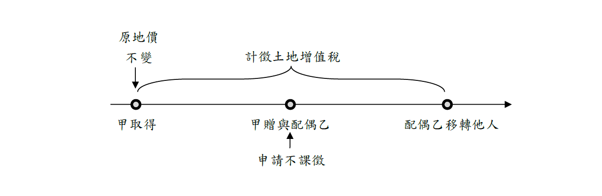
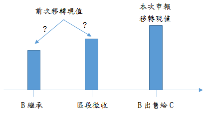
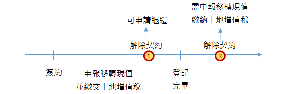
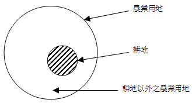
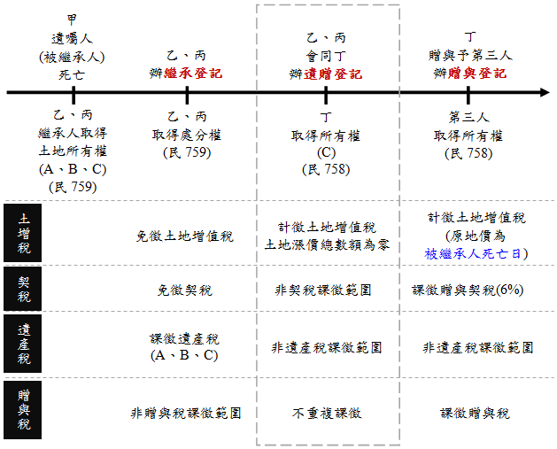

主題精選：土地增值稅¶
共收錄 67 篇文章。
1. 公共設施保留地與公共設施用地之比較（二）¶
發布日期: 2026-02-05
內文¶
- 租稅優惠： (1)地價稅：
①公共設施保留地：
• 公共設施保留地未作任何使用並與使用中之土地隔離，免徵地價稅。
• 公共設施保留地作農業使用，課徵田賦。田賦自民國76年停徵迄今。
• 公共設施保留地作自用住宅用地，按千分之二計徵地價稅。
• 公共設施保留地作自用住宅用地以外之建築使用，統按千分之六計徵地價稅（不累進）。（土稅§19）
②公共設施用地：
• 道路：無償供公眾通行之道路土地，經查明屬實者，在使用期間內，地價稅全免。但其屬建造房屋應保留之法定空地部分，不予免徵（土稅減§9）。
• 學校用地：財團法人或財團法人所興辦業經立案之私立學校用地、為學生實習農、林、漁、牧、工、礦等所用之生產用地及員生宿舍用地，經登記為財團法人所有者，全免。但私立補習班或函授學校用地，均不予減免（土稅減§8I①）。
• 公園及體育場所用地：私立公園及體育場所用地，按千分之十計徵地價稅（不累進）（土稅§18I②）。又，經事業主管機關核准設立，對外絕對公開，並不以營利為目的之私立公園及體育館場，其用地減徵百分之五十；其為財團法人組織者減徵百分之七十（土稅減§8I③）。
• 停車場用地：依都市計畫法規定設置之供公眾使用之停車場用地，按千分之十計徵地價稅（不累進）（土稅§18I④）。
• 其餘公共設施用地：上述以外之私有公共設施用地，無減免規定，持有時均應課徵地價稅。
• (2) 土地增值稅：
①公共設施保留地：
• 被徵收之土地，免徵土地增值稅；依法得徵收之私有土地，土地所有權人自願售與需用土地人者，免徵土地增值稅（土稅§39I）。
• 依都市計畫法指定之公共設施保留地尚未被徵收前之移轉，免徵土地增值稅（土稅§39Ⅱ）。
②公共設施用地：
• 都市土地：私有公共設施用地（如道路用地、學校用地、公園用地、體育場所用地、停車場用地等）之移轉，無減免規定，移轉時均應課徵土地增值稅。
• 非都市土地：非都市土地經需用土地人開闢完成或依計畫核定供公共設施使用，並依法完成使用地編定，其尚未被徵收前之移轉，經需用土地人證明者，免徵土地增值稅（土稅§39Ⅲ）。
• (3) 房地合一所得稅：
①公共設施保留地：
• 被徵收或被徵收前先行協議價購之土地，免徵所得稅（所§4-5I③）。
• 尚未被徵收前移轉依都市計畫法指定之公共設施保留地，免徵所得稅（所 §4-5I④）。
②公共設施用地： 所有公共設施用地，無減免規定，交易時均應課徵所得稅。
• (4) 遺產稅：
①公共設施保留地： 公共設施保留地因繼承而移轉，免徵遺產稅（都§50-1）。
②公共設施用地：
• 道路用地：被繼承者遺產中經政府闢為公眾通行道路之土地或其他無償供公眾通行之道路土地，經主管機關證明者，不計入遺產總額（其租稅效果等同免徵遺產稅）。但其屬建造房屋應保留之法定空地部分，仍應計入遺產總額（遺贈§16⑫）。
• 其餘公共設施用地：道路用地以外之私有公共設施用地，無減免規定，繼承時均應課徵遺產稅。
• (5) 贈與稅：
①公共設施保留地： 公共設施保留地因配偶、直系血親之贈與而移轉者，免徵贈與稅（都§50-1）。
②公共設施用地： 所有公共設施用地，無減免規定，贈與時均應課徵贈與稅。
綜上，對公共設施保留地土地所有權人之權益保障較公共設施用地為多，違反租稅平等原則。
【註】 都：都市計畫法。 徵：土地徵收條例。 土稅：土地稅法。 土稅減：土地稅減免規則。 遺贈：遺產及贈與稅法。 所：所得稅法。
注：本文圖片存放於 ./images/ 目錄下
2. 土地增值稅之免徵、不課徵、記存及不計徵¶
發布日期: 2025-10-30
內文¶
• (一) 意義：
-
免徵：免除土地增值稅負擔。如繼承而移轉之土地，免徵土地增值稅（土稅§28）。
-
不課徵：尚未結算已發生之土地增值稅，俟下次移轉時一併結算並徵收。如配偶相互贈與之土地，得申請不課徵土地增值稅（土稅§28-2）。
-
記存：結算已發生之土地增值稅，記在帳上，俟下次移轉時一併徵收。如都市更新權利變換，土地所有權人應分配之土地範圍內，分配予各該合法建築物所有權人、地上權人、永佃權人、農育權人或耕地三七五租約承租人，視為土地所有權人獲配土地後無償移轉，其土地增值稅減徵40%，並准予記存，於權利變換後再移轉，一併繳納（都更§60）。
-
不計徵：土地增值稅之課徵範圍（時機）為所有權移轉及設定典權。不計徵，指不在土地增值稅之課徵範圍內。如市地重劃後，重行分配予原土地所有權人之土地，不計徵土地增值稅。其理由是市地重劃後，重行分配與原土地所有權人之土地，自分配結果確定之日起，視為其原有之土地（平§62）。
• (二) 比較：
-
免徵土地增值稅與不課徵土地增值稅之比較： (1)免徵土地增值稅屬於租稅免除，不課徵土地增值稅，屬於租稅遞延。 (2)免徵土地增值稅，其原地價必須重新核定。不課徵土地增值稅，其原地價未更動。 (3)免徵土地增值稅，其納稅義務人不必申請（無租稅申報協力義務）。不課徵土地增值稅，納稅義務人有必須申請者（有租稅申報協力義務），亦有不必申請者（無租稅申報協力義務）。
-
不課徵土地增值稅與土地增值稅記存之比較： (1)不課徵土地增值稅，指尚未結算已發生之土地增值稅。土地增值稅記存，指結算已發生之土地增值稅。 (2)不課徵土地增值稅，其原地價未更動。土地增值稅記存，其原地價必須重新核定。 (3)不課徵土地增值稅，其土地漲價總數額繼續累計，累進倍數不斷提高。土地增值稅記存，其土地漲價總數額自記存時起重新計算。
-
免徵土地增值稅與不計徵土地增值稅之比較： (1)免徵土地增值稅，指在土地增值稅之課徵範圍內，但給予租稅免除。不計徵土地增值稅，指不在土地增值稅之課徵範圍內，故政府無須稽徵作業。 (2)免徵土地增值稅，其原地價必須重新核定。不計徵土地增值稅，其原地價照舊。
-
不課徵土地增值稅與不計徵土地增值稅之比較： (1)不課徵土地增值稅，指在土地增值稅之課徵範圍內，但給予租稅遞延。不計徵土地增值稅，指不在土地增值稅之課徵範圍內，故政府無須稽徵作業。 (2)不課徵土地增值稅，有必須納稅義務人申請者（有租稅申報協力義務），亦有不必納稅義務人申請者（無租稅申報協力義務）。不計徵土地增值稅，人民無納稅義務存在。 (3)不課徵土地增值稅與不計徵土地增值稅，對納稅義務人而言，其租稅效果相同。
【註】 土：土地法。 平：平均地權條例。 土稅：土地稅法。 都更：都市更新條例。
注：本文圖片存放於 ./images/ 目錄下
3. 差別稅率¶
發布日期: 2025-10-02
內文¶
土地稅採差別稅率之目的，在達成其政策目的（如平均社會財富、實現地利共享、打擊炒房投機等）。茲分述如下：
• (一) 地價稅之差別稅率：地價稅針對申報地價總額（即地價稅之稅基）與累進起點地價之倍數大小的不同，採差別稅率，以抑制兼併、壟斷土地。
• (二) 土地增值稅之差別稅率：土地增值稅針對土地漲價總數額（即土地增值稅之稅基）與原地價（即原規定地價或前次申報移轉現值）之倍數大小的不同，採差別稅率，以實現地利共享，並減少投機誘因。
• (三) 房地合一所得稅之差別稅率：房地合一所得稅針對持有房地年數長短的不同，採差別稅率，以懲罰短期持有及打擊炒房投機。
• (四) 房屋稅之差別稅率：房屋稅針對持有房屋戶數的不同，採差別稅率，以制止囤房投機。
值得一提的是，地價稅及土地增值稅屬於累進稅，房地合一所得稅及房屋稅屬於比例稅。不論累進稅或比例稅，皆可採差別稅率，發揮租稅之政策效果。
注：本文圖片存放於 ./images/ 目錄下
4. 土地增值稅之免徵、不課徵、記存及不計徵¶
發布日期: 2025-07-24
內文¶
• (一) 意義：
-
免徵：在土地增值稅之課徵範圍，但免除其租稅負擔，故屬於租稅免除。原地價須更動。如繼承而移轉土地，免徵土地增值稅（土稅§28）。
-
不課徵：在土地增值稅之課徵範圍，但本次不予課徵，延至下次移轉時一併課徵，故屬於租稅遞延。原地價無須更動。如配偶相互贈與土地，得申請不課徵土地增值稅（土稅§28-1）。
-
記存：在土地增值稅之課徵範圍，但結算已發生之土地增值稅，記在帳上，延至下次移轉時一併課徵，故屬於租稅遞延。原地價須更動。如金融機構因合併而隨同移轉土地予存續之金融機構，其應繳納之土地增值稅准予記存（金§13）。
-
不計徵：不在土地增值稅之課徵範圍，故無須課徵土地增值稅。原地價無須更動。如土地重劃交換土地，不計徵土地增值稅。
• (二) 比較：
• T. ABLE_PLACEHOLDER_1
• (三) 法條誤用舉例：
早期並未嚴格區分免徵、不課徵及不計徵之差異，因此現行部分法條有誤用情形，造成適用混淆。茲舉例如下：
-
平均地權條例第36條第1項規定：「土地增值稅之徵收，應依照土地漲價總數額計算，於土地所有權移轉或設定典權時行之。但因繼承而移轉者，不徵土地增值稅。」前揭法條之不徵，應為免徵。
-
平均地權條例施行細則第65條第1項規定：「分別共有土地分割後，各人所取得之土地價值與其分割前應有部分價值相等者，免徵土地增值稅；其價值減少者，就其減少部分課徵土地增值稅。」及同條第3項規定：「土地合併後，各共有人應有部分價值與其合併前之土地價值相等者，免徵土地增值稅。其價值減少者，就其減少部分課徵土地增值稅。」前揭法條所稱免徵，應為不課徵。
-
土地稅法施行細則第42條第2項規定：「分別共有土地分割後，各人所取得之土地價值與其分割前應有部分價值相等者，免徵土地增值稅；其價值減少者，就其減少部分課徵土地增值稅。」及同條第4項規定：「土地合併後，各共有人應有部分價值與其合併前之土地價值相等者，免徵土地增值稅。其價值減少者，就其減少部分課徵土地增值稅。」前揭法條所稱免徵，應為不課徵。
【註】
-
土稅：土地稅法。
-
金：金融機構合併法。
注：本文圖片存放於 ./images/ 目錄下
5. 申報土地移轉現值之認定¶
發布日期: 2025-07-01
內文¶
• (一) 時間認定
土地所有權移轉或設定典權，其申報移轉現值之審核標準，依下列規定(土稅§30 I；平權47-1 I)：
-
申報人於訂定契約之日起三十日內申報者，以訂約日當期之公告土地現值為準。
-
申報人逾訂定契約之日起三十日始申報者，以受理申報機關收件日當期之公告土地現值為準。
-
遺贈之土地，以遺贈人死亡日當期之公告土地現值為準。
-
依法院判決移轉登記者，以申報人向法院起訴日當期之公告土地現值為準。
-
經法院或法務部行政執行署所屬行政執行分署（簡稱行政執行分署）拍賣之土地，以拍定日當期之公告土地現值為準。但拍定價額低於公告土地現值者，以拍定價額為準；拍定價額如已先將設定抵押金額及其他債務予以扣除者，應以併同計算之金額為準。
-
經政府核定照價收買或協議購買之土地，以政府收買日或購買日當期之公告土地現值為準。但政府給付之地價低於收買日或購買日當期之公告土地現值者，以政府給付之地價為準。
• (二) 價值認定
-
前第1款至第4款申報人申報之移轉現值，經審核低於公告土地現值者，得由主管機關照其自行申報之移轉現值收買或照公告土地現值徵收土地增值稅。
-
前第1款至第3款之申報移轉現值，經審核超過公告土地現值者，應以其自行申報之移轉現值為準，徵收土地增值稅。
申報移轉現值認定之整理
• T. ABLE_PLACEHOLDER_1
注：本文圖片存放於 ./images/ 目錄下
6. 不計徵土地增值稅之意涵¶
發布日期: 2025-06-19
內文¶
• (一) 不計徵土地增值稅之意義： 亦稱不徵土地增值稅；指不在土地增值稅之課徵範圍，因此不必徵收土地增值稅。
• (二) 不計徵土地增值稅與免徵土地增值稅之比較：
-
不計徵土地增值稅，指不在土地增值稅之課徵範圍，故不必課徵土地增值稅。免徵土地增值稅，指在土地增值稅之課徵範圍，故應課徵土地增值稅，但給予租稅免除。
-
不計徵土地增值稅，其原地價未更動，租稅效果等同「不課徵土地增值稅」（即租稅遞延）。免徵土地增值稅，其原地價必須更動，租稅效果為租稅免除。
• (三) 舉例說明：
-
土地增值稅之課徵時機為移轉（指土地所有權移轉）及設定典權。準此，設定地上權及地上權移轉不在土地增值稅之課徵範圍。因此,設定地上權及地上權移轉不計徵土地增值稅。但不宜敍述為「設定地上權及地上權移轉免徵土地增值稅或不課徵土地增值稅」。
-
平均地權條例施行細則第87條第1項規定：「土地所有權人依本條例第六十條負擔之公共用地及抵費地，不計徵土地增值稅，逕行登記為直轄市、縣（市）有。但由中央主管機關辦理者，抵費地登記為國有。」市地重劃之原土地所有權人交換分合土地，原本屬於土地移轉，應課徵土地增值稅。但平均地權條例第62條本文規定：「市地重劃後，重行分配與原土地所有權人之土地，自分配結果確定之日起，視為其原有之土地。」亦即，市地重劃之原土地所有權人交換分合後所取得之土地，視為其原有土地，等同未移轉土地。因此，市地重劃交換分合之土地，不計徵土地增值稅。同理，原土地所有權人所負擔之公共用地及抵費地，亦為交換分合之一部分，因此不計徵土地增值稅。
[圖片1]
文章圖片¶

注：本文圖片存放於 ./images/ 目錄下
7. 配偶相互贈與得申請不課徵之概念¶
發布日期: 2025-06-03
內文¶
• (一) 情形
配偶相互贈與之土地，得申請不課徵土地增值稅(土稅§28-2 I前段)。主要是基於配偶為生活共同體，且於一般生活事務相互代理，故相互贈與土地可能是考量家庭財產安排，而非為獲取土地自然增值利益，因而得按其需求申請不課徵。
又應特別注意者，配偶相互贈與土地非當然不課徵土地增值稅，而是可由當事人自行選擇。但無論是否申請不課徵，均須申報移轉現值。
• (二) 原地價認定
於再移轉依法應課徵土地增值稅時，以該土地第一次不課徵土地增值稅前之原規定地價或最近一次課徵土地增值稅時核定之申報移轉現值為原地價，計算漲價總數額，課徵土地增值稅(土稅§28-2 I後段)。換言之，以第一次不課徵前原地價計算土地漲價總數額，原不課徵之土地增值稅，實質上已予補徵，政府稅收並未減少，僅發生延遲課徵效果。
概念如下圖所示，甲取得土地後，因特殊考量而將該筆土地贈與配偶乙，並申請不課徵土地增值稅，則該次移轉即不計算也不繳納土地增值稅，故原地價也不予調整，待配偶乙移轉他人需課徵土地增值稅時，則以甲取得至乙移轉他人此段期間之土地漲價計算，而非以乙取得為原地價。
[圖片1]
值得注意的是，雖然此次配偶間移轉得暫不課徵，惟將租稅時機往後遞延，多年後再將土地移轉給第三人時，反而可能會適用比原先選擇「課徵」時的稅率還高，因為公告土地現值一般多逐年調高，選擇不課徵未必有利。
• (三) 配偶合併認定
-
於再移轉計課土地增值稅時，贈與人或受贈人於其具有土地所有權之期間內，有支付改良土地之改良費用或增繳之地價稅者，準用減除或抵繳規定(土稅§28-2 II前段)，避免原贈與人(夫)有支付土地改良費用及增繳地價稅，但於贈與給受贈人(妻)後，反而不能減除之不合理情形。
-
其為經重劃之土地，準用其減徵規定(土稅§28-2 II中段)。舉例而言，某甲參與市地重劃後配回之土地贈與妻乙，嗣後妻乙再將該土地出售於丙。乙得否適用重劃後第一次移轉之土地增值稅減徵規定？其情形應分述如下： (1)甲乙贈與有申請不課徵土地增值稅 因有申請不課徵，該次租稅遞延，故非屬重劃後第一次移轉之情形。因此，當乙再將土地出售於丙，仍得適用土地增值稅減徵百分之四十。 (2)甲乙贈與未申請不課徵土地增值稅 因未申請不課徵，該次贈與移轉即屬重劃後第一次移轉之情形，乙的土地增值稅得予減徵百分之四十。惟當乙再將土地出售於丙，即無土地增值稅之減徵。
-
該項再移轉土地，於申請適用自用住宅稅率課徵土地增值稅時，其出售前一年內未曾供營業使用或出租之期間，應合併計算(土稅§28-2 II後段)。例如夫持有5個月皆未營業或出租，後贈與給妻，則妻原則上只要再持有7個月無營業或出租，兩者合計滿一年即可符合規定。
文章圖片¶

注：本文圖片存放於 ./images/ 目錄下
8. 房地合一所得稅之稅基計算¶
發布日期: 2025-05-20
內文¶
根據所得稅法及房地合一稅申報作業要點，茲整理房地合一所得稅之稅基，詳細公式如下：
所得餘額＝成交價額－原始取得成本（另可加其他必要成本、房貸額外負擔）－移轉必要費用（另可加高報現值之多繳土地增值稅）－三年內虧損－以公告現值計之土地漲價總數額
• (一) 成交價額 本次交易時之成交價額
• (二) 原始取得成本（或經物價調整之現值）
-
出價取得（原始取得成本） 個人房屋、土地交易所得或損失之計算，其為出價取得者，以交易時之成交價額減除原始取得成本，與因取得、改良及移轉而支付之費用後之餘額為所得額。亦即當初購入金額
-
繼承或受贈取得（現值） 其為繼承或受贈取得者，以交易時之成交價額減除繼承或受贈時之房屋評定現值及公告土地現值按政府發布之消費者物價指數調整後之價值，與因取得、改良及移轉而支付之費用後之餘額為所得額。亦即當初無購入金額，故以房屋評定現值+公告土地現值並經物價調整後為基礎
• (三) 其他必要成本（不含在成交價3%內） 其提示下列證明文件者，亦得包含於成本中減除：
-
購入房屋、土地達可供使用狀態前支付之必要費用（如契稅、印花稅、代書費、規費、公證費、仲介費等），以及於房屋、土地所有權移轉登記完成前，向金融機構借款之利息
-
取得房屋後，於使用期間支付能增加房屋價值或效能且非二年內所能耗竭之增置、改良或修繕費
-
個人除得按前2點規定減除成本外，得再減除依土地稅法施行細則第51條規定經主管稽徵機關核准減除之改良土地已支付之下列費用： (1)改良土地費用 (2)已繳納之工程受益費 (3)土地重劃負擔總費用 (4)因土地使用變更而無償捐贈作為公共設施用地其捐贈土地之公告現值總額
• (四) 房貸額外負擔 個人繼承房地時，併同繼承被繼承人所遺以該房地為擔保向金融機構抵押貸款之未償債務餘額(貸款餘額)者，嗣交易該房地，依所得稅法規定計算房地交易所得時，該貸款餘額超過繼承時房屋評定現值及公告土地現值合計數(房地現值)，且確由該個人實際負擔償還部分，得自房地交易所得中減除。係因該貸款餘額屬繼承該房地所產生之額外負擔，未來出售該房地時，該額外負擔得自交易所得中減除
• (五) 移轉必要費用 個人交易房屋、土地所支付之必要費用（如仲介費、廣告費、清潔費、搬運費、換約費等）。但依土地稅法規定繳納之土地增值稅(即以公告現值計算的土地增值稅額)，不得列為費用減除
• (六) 高報現值之多繳土地增值稅 個人除得按規定減除費用外，得再減除當次交易未自該房屋、土地交易所得減除之土地漲價總數額部分之已納土地增值稅稅額，其計算方式如下：[(交易時申報移轉現值—交易時公告土地現值）/以申報移轉現值計算之土地漲價總數額] × 已納土地增值稅
• (七) 三年內房地交易損失（盈虧互抵） 個人房屋、土地交易損失，得自交易日以後三年內之房屋、土地交易所得減除之
• (八) 依公告土地現值計算之土地漲價總數額 依土地稅法第30條第1項規定公告土地現值計算之土地漲價總數額
注：本文圖片存放於 ./images/ 目錄下
9. 租稅平等原則¶
發布日期: 2025-05-15
內文¶
• (一) 意涵：
-
憲法第7條規定平等原則，旨在防止立法者恣意對人民為不合理之差別待遇。如對相同事物，為無正當理由之差別待遇，即與憲法第7條之平等原則有違。法規範是否符合平等權保障之要求，其判斷應取決於該法規範所以為差別待遇之目的是否合憲，其所採取之分類與規範目的之達成間，是否存有一定程度之關聯性而定（司法院釋字第779號解釋理由書）。
-
憲法第7條保障人民之平等權，法規範是否符合平等原則之要求，其判斷應取決於該法規範所以為差別待遇之目的是否合憲，其所採取之分類與規範目的之達成間，是否存有一定程度之關聯性而定。租稅法律關係中，立法者為了實現憲法所賦予之任務，而就各種稅捐之稽徵及減輕或免除分別訂定不同之規範，其分類及差別待遇，涉及國家財稅政策之整體規劃，適合由代表民意之立法機關及擁有專業能力之相關行政機關，以法律或法律明確授權之法規命令定之，其規定如有正當目的，且分類與目的之達成間具有合理關聯，即符合憲法第7條平等權保障之意旨（憲法法庭112年憲判字第19號判決理由）。
• (二) 舉例：
-
司法院釋字第779號解釋文：「土地稅法第39條第2項關於免徵土地增值稅之規定，僅就依都市計畫法指定之公共設施保留地，免徵其土地增值稅；至非都市土地經編定為交通用地，且依法核定為公共設施用地者，則不予免徵土地增值稅，於此範圍內，與憲法第7條保障平等權之意旨不符。相關機關應自本解釋公布之日起2年內，依本解釋意旨，檢討修正土地稅法相關規定。」（筆者註：現行增訂土地稅法第39條第3項，以為因應）
-
憲法法庭112年憲判字第19號判決主文：「土地稅減免規則第9條規定：『無償供公眾通行之道路土地，經查明屬實者，在使用期間內，地價稅或田賦全免。但其屬建造房屋應保留之法定空地部分，不予免徵。』其但書規定與憲法第7條平等原則尚無違背。」
注：本文圖片存放於 ./images/ 目錄下
10. 四則免徵土地增值稅之理由¶
發布日期: 2025-05-08
內文¶
• (一) 土地徵收免徵土地增值稅之理由：
-
若土地徵收課徵土地增值稅，土地所有人就無法以其補償餘額，再去購買同一地段、同一品質及同一面積之土地。
-
土地徵收與買賣不同。前者乃強制取得，後者乃合意取得。亦即，土地徵收是土地所有人在不得已、不情願情況下，被迫喪失土地，故給予免徵土地增值稅之租稅優惠。
-
現行土地徵收以市價補償，僅填補被徵收人之財產損失，未填補其非財產損失。基於土地徵收稟賦效果，應給予免徵土地增值稅之租稅優惠。
• (二) 公共設施保留地被徵收免徵土地增值稅之理由（司法院釋字第779號解釋理由書）：
-
土地倘經指定為公共設施保留地，其財產價值即大減，嚴重影響土地所有人之權益。
-
公共設施保留地之土地流動性、市場交易機會及價值，因政府政策及法令而受不利影響。
-
因政府財政困難，土地經指定為公共設施保留地後，至被徵收之期間常延宕多年，其土地流動性受限。
• (三) 公共設施保留地尚未被徵收前之移轉免徵土地增值稅之理由（司法院釋字第779號解釋理由書）：
-
於政府徵收前土地並無市場增值，以致影響市場交易機會及價值，若交易時仍規定須繳納土地增值稅，有違最後於徵收土地時免繳之原意。
-
公共設施保留地交易時，通常依公告現值徵收土地增值稅，而公告現值繫諸政府政策，未必反映市場價值，如據以徵收土地增值稅，既不合理，且不符社會公平正義原則。
-
就同一公共設施保留地，徵收時之土地所有人無須繳納土地增值稅，而徵收前交易之土地所有人卻須繳納土地增值稅，亦有失公平。
• (四) 供公共設施使用之非都市土地尚未被徵收前之移轉免徵土地增值稅之理由（司法院釋字第779號解釋理由書）：
-
非都市土地如經編定為交通用地，且依法核定為公共設施用地者，其使用受限制，流動性、市場交易機會及價值，因政府之政策及法令而受不利影響之情形，與依都市計畫法指定之公共設施保留地受不利影響者相當。
-
非都市土地若實際已成為公路，亦即供作公共設施使用，其流動性、市場交易機會及價值所受不利影響更加嚴重。
-
此類非都市土地，性質與依都市計畫法指定之公共設施保留地相似，在土地增值稅之徵免上，理應等同處理，俾符合租稅公平原則及憲法第7條保障平等權之意旨。
注：本文圖片存放於 ./images/ 目錄下
11. 公路法之私有公路之土地增值稅問題¶
發布日期: 2025-01-09
內文¶
• (一) 公路法之私有公路，移轉於自然人，不得適用不課徵土地增值稅。其理由如下：
-
非都市土地供農路使用之道地目土地，雖依法編定為交通用地，仍屬農業用地之範圍（依土地稅法第10條第1項規定，農路屬於農業用地之範圍），如移轉於自然人，得適用土地稅法第39條之2第1項規定（即作農業使用之農業用地，移轉與自然人時，得申請不課徵土地增值稅）。
-
惟依公路法所定義之公路，包括國道、省道、縣道、鄉道及專用公路，非屬於農路，如移轉於自然人，不得適用土地稅法第39條之2第1項規定。
上開乃司法院釋字第779號解釋文第三段之解釋意旨。
• (二) 公路法之私有公路，尚未被徵收前之移轉，得適用免徵土地增值稅。其理由如下：
-
都市土地之公共設施保留地，得適用土地稅法第39條第2項規定（即依都市計畫法指定之公共設施保留地尚未被徵收前之移轉，免徵土地增值稅）。
-
非都市土地供公共設施使用，得適用土地稅法第39條第3項規定（即非都市土地經需用土地人開闢完成或依計畫核定供公共設施使用，並依法完成使用地編定，其尚未被徵收前之移轉，經需用土地人證明者，免徵土地增值稅）。準此，公路法之私有公路，尚未被徵收前之移轉，如符合下列三項條件，免徵土地增值稅： (1)經需用土地人開闢完成或依計畫核定供公共設施使用。 (2)依法完成使用地編定。 (3)經需用土地人證明。
上開乃司法院釋字第779號解釋文第一段之解釋意旨。
• (三) 結論：
依法編定為交通用地之公路法之私有公路，尚未被徵收前而移轉於自然人，雖不得適用土地稅法第39條之2第1項規定（不課徵土地增值稅），但得適用土地稅法第39條第3項規定（免徵土地增值稅）。
注：本文圖片存放於 ./images/ 目錄下
12. 農業用地移轉應課徵土地增值稅之情形¶
發布日期: 2024-04-25
內文¶
農業用地移轉，依法應課徵土地增值稅之情形有那些？又，農業用地移轉應課徵土地增值稅時，其計徵土地增值稅之原地價如何認定？試彙整土地稅法相關規定，詳細析述之。
【112不動產估價師】
【解答】
• (一) 應課徵土地增值稅之情形：
-
農業用地移轉於法人，應課徵土地增值稅。但作農業使用之耕地依規定移轉與農民團體、農業企業機構及農業試驗研究機構時，其符合產業發展需要、一定規模或其他條件，經直轄市、縣（市）主管機關同意者，得申請不課徵土地增值稅。
-
農業用地移轉於自然人，未申請不課徵土地增值稅，或雖申請但未符合作農業使用之情事，應課徵土地增值稅。
-
不課徵土地增值稅之土地承受人於其具有土地所有權之期間內，曾經有關機關查獲該土地未作農業使用且未在有關機關所令期限內恢復作農業使用之情事，於再移轉時，應課徵土地增值稅。
-
不課徵土地增值稅之土地承受人於其具有土地所有權之期間內，曾經有關機關查獲該土地未作農業使用，雖在有關機關所令期限內已恢復作農業使用而再有未作農業使用之情事，於再移轉時，應課徵土地增值稅。
• (二) 課徵土地增值稅時之原地價認定：
-
以民國89年1月26日修正施行日當期之公告土地現值為原地價：作農業使用之農業用地，於土地稅法中華民國89年1月26日修正施行後第一次移轉，或依規定取得不課徵土地增值稅之土地後再移轉，依法應課徵土地增值稅時，以該修正施行日當期之公告土地現值為原地價，計算漲價總數額，課徵土地增值稅。
-
以該土地最近一次課徵土地增值稅時核定之申報移轉現值為原地價：土地稅法中華民國89年1月26日修正施行後，曾經課徵土地增值稅之農業用地再移轉，依法應課徵土地增值稅時，以該土地最近一次課徵土地增值稅時核定之申報移轉現值為原地價，計算漲價總數額，課徵土地增值稅。
注：本文圖片存放於 ./images/ 目錄下
13. 土地增值稅與契稅繳納人不同之贈與稅差異¶
發布日期: 2024-04-23
內文¶
耀哥於101年4月取得台中市西屯區一處都市計畫住宅區房地，土地面積為200平方公尺（取得當時土地申報移轉現值為每平方公尺1萬元）、房屋標準價格為250萬元，113年3月贈與其成年已有財力之子（贈與當時耀哥依公告土地現值每平方公尺2萬元申報移轉現值、房屋標準價格為220萬元，消費者物價總指數則為115.7%，且增繳地價稅已超過5%），試問贈與時所應繳納之土地增值稅、契稅由其子支付或由耀哥代為支付，贈與稅額是否有所差異？各為多少？
答：
贈與時所應繳納之土地增值稅、契稅由耀哥支付或由其子支付，贈與稅有所差異，說明與計算如下：
• 一、土地增值稅、契稅由其子（受贈人）支付
• (一) 土地增值稅＝[((200×2)－(200×1×115.7%))×20%]×(1-5%)＝32.03(萬元)
• (二) 契稅＝220×6%＝13.2(萬元)
• (三) 根據遺產及贈與稅法施行細則第19條規定：「不動產贈與移轉所繳納之契稅或土地增值稅得自贈與總額中扣除。」因此，此次贈與所繳納的土地增值稅與契稅共45.23萬元得作為此次贈與稅之扣除額。
• (四) 贈與稅＝（每年贈與總額－扣除額－免稅額）×累進稅率 [(200×2+220)－(32.03+13.2)－244]×10%＝33.08(萬元)
• 二、土地增值稅、契稅由耀哥（贈與人）支付
• (一) 土地增值稅＝32.03(萬元)
• (二) 契稅＝13.2(萬元)
• (三) 根據遺產及贈與稅法施行細則第19條規定：「不動產贈與移轉所繳納之契稅或土地增值稅得自贈與總額中扣除。」因此，此次贈與所繳納的土地增值稅與契稅共45.23萬元得作為此次贈與稅之扣除額。
• (四) 惟土地增值稅、契稅如由耀哥（贈與人）代為繳納，依遺產及贈與稅法第5條第1款規定（在請求權時效內無償承擔債務者，其承擔之債務），應以贈與論，故應加入贈與總額中，再依遺產及贈與稅法施行細則第19條規定自贈與總額中扣除。
• (五) 贈與稅＝（每年贈與總額－扣除額－免稅額）×累進稅率 [(200×2+220+45.23)－45.23－244]×10%＝37.06(萬元)
綜此，土地增值稅與契稅由其子支付，其贈與稅負擔相對較輕。
注：本文圖片存放於 ./images/ 目錄下
14. 土地增值稅公式之問題¶
發布日期: 2024-04-16
內文¶
土地增值稅計算公式之問題，茲彙整如下：
-
公告土地現值偏離市價，部分漲價歸私。
-
當期(同年度)移轉無土地增值。
-
僅有原地價有物價調整，費用卻無調整。
-
稅率僅20～40%，至少有一半以上土地增值歸私。
-
費用必須舉證方能扣除。
另可參司法院釋字第286號解釋之不同意見書：
• (1) 土地增值稅之徵收，以土地之自然漲價為標的，應依照土地自然漲價總數額計算，不包括土地所有權人為改良土地已支出之全部費用及因而增加之價值在內。
• (2) 土地所有權人改良土地已支出之全部費用，不問土地價值有無增加，均許減去，乃以鼓勵土地所有權人改良土地為理由。
• (3) 土地可因其所有權人施以勞力資本改良而增加價值，則為常態。此項價額，主管機關既認於計算土地自然漲價總數額時，理應扣除，自應修正估價法規，改進估計技術，予以推計分離。同條例施行細則為求課徵簡便，未規定土地所有權人於報請驗證登記改良費時，同時將土地因改良而增加之價額，報請驗證登記，以便於計算土地自然漲價總額數時憑以減去，致土地有無因土地所有權人改良而增加之價值或其價額若干？事後查核困難，但仍非不能查核，自應克服困難，予以核計而為合理之劃分。
• (4) 明定該項費用之範圍，致扣除項目，不包括土地所有權改良土地所增加之價值，而將其算入自然增值。此種計算之方法，雖可減少困難，節省稽徵成本，然造成課稅基礎之混淆，已足以損及公益，且因土地增值稅之課稅標的中含有「可能存在」之非自然增值，在利益團體影響下，導致降低課徵土地增值稅稅率之立法。
注：本文圖片存放於 ./images/ 目錄下
15. 配偶相互贈與之土地增值稅¶
發布日期: 2024-04-11
內文¶
甲將名下A地贈與其妻乙，是否需課徵土地增值稅？乙持有A地數年後出售予丙，依規定如何認定其原地價，計算漲價總數額，課徵土地增值稅？試依土地稅法相關規定說明之。
【112高考】
【解答】
• (一) 經申請不課徵土地增值稅：
-
不課徵土地增值稅：配偶相互贈與之土地，得申請不課徵土地增值稅。準此，甲將名下A地贈與其妻乙，倘經申請不課徵，則不課徵土地增值稅。
-
再出售之原地價認定：乙持有A地數年後出售予丙，依法應課徵土地增值稅時，以採該土地第一次不課徵土地增值稅前之原規定地價或最近一次課徵土地增值稅時核定之申報移轉現值為原地價，計算漲價總數額，課徵土地增值稅。
• (二) 未申請不課徵土地增值稅：
-
應課徵土地增值稅：配偶相互贈與之土地，如未申請不課徵，則應課徵土地增值稅。準此，甲將名下A地贈與其妻乙，倘未申請不課徵，則應課徵土地增值稅。
-
再出售之原地價認定：乙持有A地數年後出售予丙，依法應課徵土地增值稅時，以採該土地甲贈與乙當時課徵土地增值稅核定之申報移轉現值為原地價，計算漲價總數額，課徵土地增值稅。
注：本文圖片存放於 ./images/ 目錄下
16. 土地稅之政策功能¶
發布日期: 2023-10-05
內文¶
土地稅，指地價稅及土地增值稅。課徵土地稅之功能（或目的、作用）如下：
• (一) 財政功能－豐盈國庫：地價稅與土地增值稅皆屬地方稅，因此課徵土地稅可以增加地方財政收入，使地方政府有餘力從事地方公共建設。 地方公共建設增加，不動產價格上漲，土地稅收因而增加，再以土地稅收投入地方公共建設，形成善的循環，並達成「取之於地方，用之於地方」之地方自治。
• (二) 經濟功能－地盡其利：地價稅具有持有成本效果及固定成本效果，可以促進土地利用。土地增值稅可以去除不勞而獲之投機誘因，使土地回歸正當合理利用。
• (三) 社會功能－地利共享：地價稅課取土地之天然利益歸公，土地增值稅課取土地之社會利益歸公。天然利益與社會利益皆屬土地所有人之不勞利得，因此收歸公有，供全體國民共享。¶
注：本文圖片存放於 ./images/ 目錄下
17. 不動產移轉稅之課徵效果¶
發布日期: 2023-09-21
內文¶
不動產移轉稅主要是土地增值稅及房地合一所得稅。土地增值稅課徵之標的為土地，房地合一所得稅課徵之標的為土地及房屋。二者皆是不動產資本利得稅。
課徵不動產移轉稅之效果如下：
• (一) 租稅轉嫁效果：不動產移轉稅係針對出售不動產而獲利之一方（即賣方）課徵。然，當不動產景氣時，常呈現賣方市場。因此，賣方提高售價而將部分稅負轉嫁予買方。
• (二) 市場閉鎖效果：課徵土地增值稅及房地合一所得稅，使賣方獲利減少，而減少供給；又，使買方獲利減少，而減少需求，最後造成土地交易量減少（即市場閉鎖現象）。另，市場閉鎖會導致租稅閉鎖（即稅收減少）。
• (三) 抑制投機效果：土地增值稅及房地合一所得稅皆在課取房地所有人手中之不勞而獲，去除投機者之投機誘因，減少房地投機。¶
注：本文圖片存放於 ./images/ 目錄下
18. 夫妻剩餘財產差額分配之相關稅負¶
發布日期: 2023-05-02
內文¶
依據民法第1030條之1，法定財產制關係消滅時，夫或妻現存之婚後財產，扣除婚姻關係存續所負債務後，如有剩餘，其雙方剩餘財產之差額，應平均分配。但下列財產不在此限：
• 一、因繼承或其他無償取得之財產。
• 二、慰撫金。
此為夫妻剩餘財產差額分配請求之規定，至於其涉及不動產移轉之相關稅負，茲說明如下：
• (一) 土地增值稅
- 一方死亡時
夫妻一方死亡，生存配偶依民法第1030條之1規定行使剩餘財產差額分配請求權，於申報土地移轉現值時，應檢附其與全體繼承人協議給付文件或法院確定判決書，並准依土地稅法第28條之2規定，申請不課徵土地增值稅（參台財稅字第09604560470號）。
• (1) 申報移轉現值 A.其於生存配偶與全體繼承人訂立協議給付文件之日起30日內申報者，以訂立協議給付文件日當期之公告土地現值為準。 B.逾訂立協議給付文件之日30日後始申報者，以受理機關收件日當期之公告土地現值為準。 C.依法院判決移轉登記者，以申報人向法院起訴日當期之公告土地現值為準。
• (2) 原地價 以應給付差額之配偶取得該土地時核計土地增值稅之現值為原地價。
- 其他原因（離婚或婚姻關係存續中將法定財產制變更為其他財產制）
申請不課徵土地增值稅，相關說明同上（參台財稅字第10700509500號令）。
• (二) 契稅
- 一方死亡時
依契稅條例第2條規定：「不動產之買賣、承典、交換、贈與、分割或因占有而取得所有權者，均應申報繳納契稅。」有關配偶一方依法行使剩餘財產差額分配請求權而取得不動產所有權，非上開條文所定應申報繳納契稅之範圍，應免予報繳契稅。
- 其他原因
同上
• (三) 房地合一稅
- 一方死亡時
非所得稅課徵範圍，惟應注意，涉及房地合一所得稅之「非出價取得」。依據房地合一稅申報作業要點第四點：「配偶之一方依民法第一千零三十條之一規定行使剩餘財產差額分配請求權取得之房屋、土地，為配偶之他方原取得該房屋、土地之日。」
- 其他原因
同上。
• (四) 贈與稅
- 一方死亡時
非屬贈與稅課徵範圍。
- 其他原因
同上。
• (五) 遺產稅
- 一方死亡時
被繼承人之配偶依民法第一千零三十條之一規定主張配偶剩餘財產差額分配請求權者，納稅義務人得向稽徵機關申報自遺產總額中扣除。納稅義務人未於稽徵機關核發稅款繳清證明書或免稅證明書之日起一年內，給付該請求權金額之財產予被繼承人之配偶者，稽徵機關應於前述期間屆滿之翌日起五年內，就未給付部分追繳應納稅賦。(遺贈17-1) 換言之，屬遺產稅之扣除額。
- 其他原因
離婚或財產制變更，無涉遺產稅。¶
注：本文圖片存放於 ./images/ 目錄下
19. 農地交易屬房地合一稅課徵範圍：臺中高等行政109簡上字第31號¶
發布日期: 2023-02-28
內文¶
實務上仍有許多人誤解農地免徵房地合一稅，同學應予釐清。 農地本就屬於依法得核發建築執照之土地，例如可以蓋農舍、相關農業設施（資材室）等，故屬房地合一稅課徵範圍，惟為鼓勵農業政策，所得稅法也規定如有取得「土地增值稅不課徵證明書」者，則可免納房地合一稅。 因此判斷原則如下： ◎有課徵土地增值稅的農地→要繳房地合一稅 ◎不課徵土地增值稅的農地→免繳房地合一稅
以下透過一行政判決為例，予以補充觀念：
■事實 甲於民國106年3月2日以拍賣原因登記取得花蓮縣A地（持分4分之1，所屬面積1,106.25平方公尺），旋於同年月出售，106年3月17日完成所有權移轉登記，經國稅局查得甲持有A地期間在1年以內，且未於該土地完成所有權移轉登記之次日起30日內，辦理個人房屋土地交易所得稅（下稱房地合一稅）申報，乃依查得資料核定應納稅額25,875元，並裁處罰鍰20,000元。甲不服，申請復查後猶表不服，提起訴願，遭決定駁回，遂提起行政訴訟。
■甲主張依所得稅法第4條之4第1項規定核課房地合一稅的標的，包含個人及營利事業自中華民國105年1月1日起交易房屋、房屋及其坐落基地或依法「得核發」建造執照之土地；該條第3項規定，第1項所定房屋之範圍，不包括依農業發展條例申請興建之農舍。本件上訴人出售的是共有持分的農地，面積不足0.25公頃，根本無法申請農舍建照，不是所得稅法第4條之4條第1項規定核課房地合一稅的課稅範圍。因該條第3項規定，依農業發展條例申請興建之農舍並非第1項房地合一稅核課範圍，其坐落之土地自然不是依法得核發建造執照之土地。 （此同為許多人誤解之處）
■判決理由
-
於105年1月1日以前，個人及營利事業出售土地享有免納所得稅之租稅優惠，容易衍生納稅義務人運用操控房地價格，規避所得稅等缺失。為解決現制房屋及土地分開課稅之缺失，建立合理透明稅制，抑制短期投機炒作，健全不動產市場發展，乃對自105年1月1日起交易房屋、房屋及其坐落基地或依法得核發建造執照之土地，其交易所得納入課徵所得稅範圍，其中排除課稅範圍者，為依農業發展條例申請興建之農舍。惟農舍坐落之土地，法律並未將其排除在外，僅於符合農業發展條例第37條及第38條之1規定而申請不課徵土地增值稅時，始有免納所得稅之適用。又「依法得核發建造執照之土地」，依最高行政法院102年度判字第296號判決意旨，係以土地本質來認定，而非以土地移轉當下之外觀狀態判斷之，否則易生以人為操作俾得規避稅賦。
-
經查，A地之總面積為4,425平方公尺，甲持分1/4面積為1,106.25平方公尺，使用分區：山坡地保育區；使用地類別：農牧用地。又A地屬非都市土地範圍，如符合「農業用地興建農舍辦法」或「申請農業用地做農業設施容許使用審查辦法」許可要件，非不得申請建築農舍或農業生產設施；查無A地相關坡度專業技師簽證文件據以認定該土地位屬坡度30%以上之山坡地而有限制建築及開發。原判決略以：「系爭持分土地面積雖未達興建農舍規定之2,500平方公尺，惟非不能藉由擴大持分、合併土地或參加興建集村農舍等方式克服而使之能供建築，如僅因面積不足供建築即不課稅，豈非變相鼓勵土地以化整為零方式為交易而避稅，故系爭土地核非客觀上無法申請核發建造執照，本質仍屬依法得供建築之土地，為所得稅法第4條之4規定之課徵範圍。」等語，認定A地符合所得稅法第4條之4規定應課徵房地合一稅之標的，經核並無違誤。
-
亦即，依土地性質，在客觀上絕對不能核發建照，始得謂『依法不能建築之土地』。由於一般可供建築之土地，如欲獲核發建照，往往尚須符合相關土地使用、建築法令之要件，如因此等法規要件不備未能獲核發建照，尚非土地本身不能建築之故，因此所謂『依法不能建築』，應區別『土地性質在客觀上絕對不能核發建照』，抑或『原可能供建築，只是其他法令要件不備』情形，否則浮濫擴大解釋依法不能建築土地而得免徵所得稅，將增加人為操縱、逃避稅捐並形成不公。
4. 惟農業發展條例第37條及第38條之1規定，係規範作農業使用之農業用地移轉予自然人時，須取得農業主管機關核發該土地作農業使用證明書，得申請不課徵土地增值稅。而所得稅法第4條之5第1項第2款既以『符合農業發展條例第37條及第38條之1規定』為要件，立法係配合農業政策鼓勵農地作農業使用之減免為規定，該條解釋上自應以實際供作農業使用，始得受鼓勵而予減免。關於是否『實際供作農業使用』，事涉農業使用之定義與實際狀況之專業判斷，依行政專業分工、機關間相互協力以提升效能之法理，自宜由主管農業事務之專責單位出具農用證明書以資證明，始能免納土地交易所得稅。準此，個人出售土地，仍應以該土地出售時符合『作農業使用』規定，並檢具農用證明書，始能免納土地交易所得稅。（注意實務上國稅局會要求提出的是「土地增值稅不課徵證明書」，有農業用地作農業使用證明沒有申請不課徵土地增值稅一樣不行）¶
注：本文圖片存放於 ./images/ 目錄下
20. 地政士辦理假買賣真贈與之刑事責任：臺灣高等法院高雄分院104上易字第138號判決、臺灣士林地方法院105訴字第128號判決¶
發布日期: 2023-02-14
內文¶
實務上地政士為協助委託人「節稅」，或許會有一些「建議」。 然而，其中有關假買賣真贈與之作法，已有許多刑事判決，地政士收受報酬並不高（還會被沒入），卻受刑責處罰，實得不償失，宜多所注意。 這部分亦可能在一些實例題出現，同學可準備一些相關論述。
• 一、使公務員登載不實罪（臺灣高等法院高雄分院104上易字第138號）
甲委由地政士丙將其土地出售給其孫乙，但實際上並無出售本件土地之真意，渠3人共同基於使公務員登載不實之犯意聯絡，由甲及乙檢附上蓋有2人印文之本件土地所有權買賣移轉契約書為附件，連同土地登記申請書委由丙以「買賣」為原因，向K地政事務所遞件申請土地所有權移轉登記。
本件土地實際上甲欲以贈與方式，移轉土地所有權予乙，而當時被告乙之經濟生活狀況及主觀意願，其確無買受本件土地之能力及真意。被告丙雖辯稱以買賣作為登記原因係甲等人之決定，並有檢附相關支付價金證明云云，然審諸渠既擔任執業代書，對於稅捐相關法規及土地交易流程本即知之甚詳…被告丙既清楚知悉甲實欲將本件土地贈與被告乙，業如前述，最終卻以「買賣」為登記原因送件，其主觀上對於上開「買賣」原因關係乃不實事項之情即有所認知，而對於此部分犯行亦同有犯意聯絡及行為分擔。丙巳證稱有向甲、乙介紹買賣與贈與交易異同，嗣經甲、乙共同決定以買賣為登記名義乙節。…被告丙辯稱：我是確認甲與乙要用買賣做原因，才以此事由辦理土地登記，不知道他們實際上是否為贈與云云，均核與事證未合，難認為可採。
刑法第214條使公務員登載不實罪之成立，須一經他人之聲明或申報，公務員即有登載之義務，並依其所為之聲明或申報予以登載，而屬不實之事項者，始足構成。地政機關辦理土地所有權移轉登記時，僅須審核形式上之要件是否具備即足，對於土地所有權移轉之實質上是否真正，並無審認之責，倘行為人明知所申辦之土地所有權移轉登記，實質上並非真正，仍以該不實之事項向地政機關申辦登記，使地政機關承辦之公務員登載於職務上所掌之相關公文書內，自與上開犯罪構成要件相當。
因此，三人犯刑法第214條使公務員登載不實罪。渠乙及丙就上開犯行與甲彼此間有犯意聯絡及行為分擔，均為共同正犯。法官認定他們行為足生損害於地政機關對於不動產登記管理及稅務機關核課稅捐之正確性，所為實屬不該；尤以被告丙身為執業代書，熟知不動產交易實務上此種為求避稅以買賣為名掩藏贈與之實之交易類型有觸法之虞且層出不窮，猶仍實施前開犯行，其可非難性更甚於甲乙。
• 二、幫助逃漏稅捐罪（臺灣士林地方法院105訴字第128號判決）
• A. 為B之子，A欲將其所有K地贈與B，委請受顧某地政士事務所擔任登記助理員之C，代為辦理系爭土地、建物之所有權移轉登記及有關之稅務事項。B及C均明知A與B間就系爭土地及建物，實際上並無買賣關係存在，惟若以「贈與」為所有權移轉登記原因，納稅義務人B須依一般稅率經核課較高額之土地增值稅，無法適用土地稅法第34條第1項出售自用住宅用地之土地增值稅優惠稅率，為使B得以適用優惠稅率逃漏土地增值稅，B與C共同基於使公務員登載不實之犯意聯絡，決定佯以「買賣」作為系爭土地及建物之所有權移轉登記原因。不知情之地政事務所承辦公務員經形式審查後，將B因「買賣」取得系爭土地及建物所有權之不實事項，登載於職務所掌之土地、建物登記簿等公文書，足以生損害於地政機關對於不動產登記管理及稅捐稽徵機關對於土地增值稅核課之正確性，C幫助B以上述詐術，逃漏按一般稅率與優惠稅率核課之土地增值稅差額337萬9,120元；嗣C辦妥系爭土地、建物所有權移轉登記及有關之稅務事項後，收受B給付之現金報酬6,400元。
按刑法第214 條使公務員登載不實事項於公文書罪，須一經他人之聲明或申報，公務員即有登載之義務，並依其所為之聲明或申報予以登載，而屬不實事項者，始足構成。若其所為之聲明或申報，公務員尚須為實質之審查，以判斷其真實與否，始得為一定之記載者，即非本罪所稱之使公務員登載不實。又土地登記事項中，移轉原因為其中重要事項之一，具有公信性，各種不同移轉登記原因，所憑課稅標準，各有不同，如買賣與贈與或遺產繼承等課稅標準不同，行為人明知該項買 賣為移轉登記原因係不實之事項，竟以之申請移轉登記，自足損害於地籍之管理，即土地登記之公信性，及政府稅課之正確性，應依刑法第214條使公務員登載不實罪論處。地政事務所僅須依遺產及贈與稅法第42條規定，審核有無檢附稅款繳清證明書等，至該案件是否屬遺產及贈與稅法第5條規定以贈與論之情事，非屬地政機關審查事項等情。換言之，地政事務所承辦公務員僅就申請人有無檢附稅款繳清證明書、證件是否齊備、證件權利內容有無瑕疵等事項，進行形式審查，至於申請書所載移轉登記原因是否屬實（即A與B間就系爭土地及建物實際上有無買賣關係存在），非屬地政機關審查事項。因此，此部分行為，B、C均係犯刑法第214條使公務員登載不實罪，且具有犯意聯絡及行為分擔，為共同正犯。
為適用土地稅法第34條第1項出售自用住宅用地之土地增值稅優惠稅率，使被告B僅須繳納較低額之土地增值稅，即佯以「買賣」之不實移轉原因，向稅捐稽徵處申報系爭土地之移轉而施詐術，使其誤按優惠稅率核課土地增值稅，使被告B逃漏按一般稅率與優惠稅率核課之土地增值稅差額337萬9,120元，是核被告B所為，係犯稅捐稽徵法第41條之逃漏稅捐罪。
爰審酌被告C身為地政士登記助理員，不思依循法規，據實辦理系爭土地、建物之所有權移轉登記及有關稅務事項，竟為圖賺取報酬，使納稅義務人之被告B獲取逃漏土地增值稅之不當利益，與被告B共同以不實所有權移轉原因辦理相關程序，所為顯非有當，且C幫助B逃漏之土地增值稅數額高達337萬9,120元，對於國家稅收之不良影響非微。
登記助理員C為稅捐稽徵法所規定執行業務之合法代理人。被告C明知被告B非因買賣取得系爭土地所有權，竟為使被告B得以適用優惠稅率，少繳土地增值稅，佯以「買賣」之不實移轉原因，向稅捐稽徵處申報系爭土地之移轉，幫助被告B逃漏前開土地增值稅，是核被告C此部分所為，係犯稅捐稽徵法第43條第2項、第1項執行業務之合法代理人幫助逃漏稅捐罪，應加重其刑。處有期徒刑4個月。屬C犯罪所得之新臺幣6,400元，沒收之，如全部或一部不能沒收或不宜執行沒收時，追徵其價額。¶
注：本文圖片存放於 ./images/ 目錄下
21. 同時免徵土地增值稅及房地合一所得稅之情形¶
發布日期: 2022-12-22
內文¶
• (一) 農業用地：
作農業使用之農業用地移轉與自然人時，得申請不課徵土地增值稅（雖名為不課徵，如無違規使用，等同免徵）（農業發展條例第37條第1項）。此等土地交易時，亦免徵房地合一所得稅（所得稅法第4條之5第1項第2款）。
• (二) 特殊建地：
農業用地變更為非農業用地，若已有主要計畫尚無細部計畫或雖有細部計畫但須整體開發使用（指市地重劃或區段徵收）而尚未辦理整體開發，無法作建築使用，仍作農業使用，得申請不課徵土地增值稅（農業發展條例第38條之1）。此等土地交易時，亦免徵房地合一所得稅（所得稅法第4條之5第1項第2款）。
• (三) 土地徵收：
被徵收之土地，免徵土地增值稅（土地稅法第39條第1項前段）。此等土地被徵收時，亦免徵房地合一所得稅（所得稅法第4條之5第1項第3款）。
• (四) 徵收前之協議價購：
依法得徵收之私有土地，土地所有權人自願售與需用土地人，免徵土地增值稅（土地稅法第39條第1項後段）。此等土地交易時，亦免徵房地合一所得稅（所得稅法第4條之5第1項第3款）。
• (五) 公共設施保留地：
依都市計畫法指定之公共設施保留地尚未被徵收前之移轉，免徵土地增值稅（土地稅法第39條第2項）。此等土地交易時，亦免徵房地合一所得稅（所得稅法第4條之5第1項第4款）。¶
注：本文圖片存放於 ./images/ 目錄下
22. 非都市用地作農用、道路之土地增值稅¶
發布日期: 2022-12-20
內文¶
假設有A、B兩地，A地為非都市一般農業區農牧用地，B地則為一般農業區交通用地，如A、B上皆各1/2耕作使用、另1/2開闢為道路（農用或公路），試問其土地增值稅如何課徵？
• 一、法令依據
（一）土地稅法第39-2條：「作農業使用之農業用地，移轉與自然人時，得申請不課徵土地增值稅。」
（二）土地稅法第39條第3項：「非都市土地經需用土地人開闢完成或依計畫核定供公共設施使用，並依法完成使用地編定，其尚未被徵收前之移轉，經需用土地人證明者，準用免徵土地增值稅。但經變更為非公共設施使用後再移轉時，以該土地第一次免徵土地增值稅前之原規定地價或最近一次課徵土地增值稅時核定之申報移轉現值為原地價，計算漲價總數額，課徵土地增值稅。」
• 二、適用情形
（一）A地（一般農業區農牧用地）
-
耕作使用：得申請不課徵。
-
農路（與農業經營不可分離）：得申請不課徵。
-
公路：應課徵。
（二）B地（一般農業區交通用地）
-
耕作使用；應課徵。
-
農路(1)政府開闢供公眾通行：免徵。(2)與農業經營不可分離：得申請不課徵。
3. 公路：免徵。¶
注：本文圖片存放於 ./images/ 目錄下
23. 土地增值稅與房地合一所得稅之連結¶
發布日期: 2022-12-15
內文¶
• (一) 課徵對象 土地增值稅之課徵對象為土地的資本利得，房地合一所得稅之課徵對象為房地的資本利得。兩者課徵對象皆有土地，房地合一所得稅再擴及房屋。
• (二) 課徵時機 土地增值稅於移轉時課徵，房地合一所得稅於交易時課徵。兩者課徵主要時機皆為買賣。
• (三) 課稅基礎 土地增值稅之課稅基礎為土地漲價總數額，房地合一所得稅之課稅基礎為房地交易所得。兩者皆以本次賣價與前次買價之差額作為稅基。差在房地合一所得稅以實價認定，土地增值稅以申報移轉現值（參考公告土地現值申報）認定。
• (四) 稅率結構 土地增值稅之基本稅率為20%，累進稅率（即懲罰性稅率）為30%及40%，長期持有另有稅率減徵之優惠。以中華民國境內居住之個人為例，房地合一所得稅之基本稅率為20%，短期持有之懲罰性稅率為35%及45%，長期持有之優惠稅率為15%。總之，兩者之基本稅率皆為20%。
• (五) 自用住宅 土地增值稅對自用住宅用地（包括一生一次及一生一屋）之優惠稅率為10%。房地合一所得稅對自住房地，課稅所得於400萬元以下，免徵；課稅所得超過400萬元部分，稅率為10%。總之，兩者對自用住宅之優惠稅率皆為10%。
• (六) 重購退稅 土地增值稅對自用住宅用地、自營工廠用地及自耕農業用地適用重購退稅，並採差額退稅。房地合一所得稅對自住房地適用重購退稅，並採比例退稅。總之，兩者對自用住宅皆有重購退稅之優惠。¶
注：本文圖片存放於 ./images/ 目錄下
24. 原地價偏高或偏低對土地所有權人之影響¶
發布日期: 2022-12-08
內文¶
原地價偏高，將會減少土地所有權人日後出售土地時之土地增值稅。原地價偏低，將會增加土地所有權人日後出售土地時之土地增值稅。所稱原地價偏高，指原地價高於移轉當期公告土地現值；所稱原地價偏低，指原地價低於移轉當期公告土地現值。茲分析如下：
• (一) 原地價偏高之情形：
-
購買公有土地：政府出售公有土地，免徵土地增值稅，並以實際出售價格為買方之原地價（土地稅法第30條之1第1款）。因此，買方已省下實際出售價格與移轉當期公告土地現值之差額所產生之土地增值稅。
-
區段徵收領回抵價地：原土地所有權人參加區段徵收，領回抵價地並以實際領回抵價地之地價為原地價（土地稅法第30條之1第3款）。因此，原土地所有權人已省下實際領回抵價地之地價與領回當期公告土地現值之差額所產生之土地增值稅。
-
故意高報移轉現值：自用住宅買賣，賣方尚未適用一人一生一次之土地增值稅率10%之優惠，惟買方已適用過。此時，買賣雙方合意高報移轉現值，使更多漲價適用10%（高報移轉現值所多出之土地增值稅由買方負擔），則買方日後出售時，原地價偏高，不必再課徵20%、30%、40%之累進稅。
• (二) 原地價偏低之情形：
-
法院判決移轉：依法院判決移轉登記者，以申報人向法院起訴日當期之公告土地現值為準（土地稅法第30條第1項第4款）。從起訴日（即送狀日）至判決確定日經歷數年之久，判決確定辦理土地移轉係以起訴日當期公告土地現值，而非以判決確定日當期公告土地現值。取得土地所有權人取得土地之原地價為數年前起訴日之公告土地現值（假定以公告土地現值為申報移轉現值）。如此，對原土地所有權人而言，減輕其土地增值稅負擔；但對取得土地所有權人而言，判決確定日當期公告土地現值與起訴日當期公告土地現值之差額所產生之土地增值稅業已發生，並由取得土地所有權人負擔。
-
典期屆滿不回贖：設定典權時，出典人應預繳土地增值稅。然，典期屆滿後，經過二年，出典人不以原典價回贖，典權人即取得典物所有權。此時，典權人取得典物辦理土地移轉，出典人不必再繳納土地增值稅。典權人取得土地之原地價為數年前設定典權時之公告土地現值（假定以公告土地現值為申報移轉現值）。因此，典物取得日當期公告土地現值與設定典權日當期公告土地現值之差額所產生之土地增值稅業已發生，並由典權人（即取得土地所有權人）負擔。
3. 法院拍賣之拍定價額低於公告土地現值：經法院或行政執行分署拍賣之土地，拍定價額低於公告土地現值者，以拍定價額為準（土地稅法第30條第1項第5款）。如此，對原土地所有權人而言，減輕其土地增值稅負擔；但對拍定人（即取得土地所有權人）而言，拍定價額與當期公告土地現值之差額所產生之土地增值稅業已發生，並由拍定人負擔。¶
注：本文圖片存放於 ./images/ 目錄下
25. 土地增值稅與契稅之比較¶
發布日期: 2022-12-01
內文¶
• (一) 租稅性質不同：
土地增值稅屬於所得稅性質，契稅屬於交易稅性質。前者針對獲利金額課稅，後者針對交易價格課稅。
• (二) 課徵時機不同：
-
土地增值稅之課徵時機為一切移轉行為，契稅之課徵時機僅限於買賣、贈與、占有、交換及分割等六種移轉行為。前者範圍較廣，後者範圍較狹。
-
土地設定典權，課徵土地增值稅；建物設定典權，課徵契稅。前者為預繳性質，即出典人回贖時，原繳之土地增值稅無息退還；後者為實質繳納，並非預繳性質，即出典人回贖時，原繳之契稅不退還。
• (三) 課徵對象不同：
土地增值稅之課徵對象為土地，契稅之課徵對象為建物。但尚未開徵土地增值稅之土地，仍應課徵契稅。
• (四) 納稅義務人不同：
以買賣為例，土地增值稅之納稅義務人為賣方，契稅之納稅義務人為買方。
• (五) 課稅基礎不同：
土地增值稅之課稅基礎為土地漲價總數額，即以本次移轉現值與原地價（即原規定地價或前次移轉現值）之差額作為獲利金額（即土地資本利得）。契稅之課稅基礎為房屋現值，以房屋現值作為交易價格。
• (六) 稅率結構不同：
土地增值稅為累進稅，稅率結構20%、30%、40%三個級距。契稅為比例稅，分別就課稅時機課徵不同稅率，稅率有2%、4%、6%三種。¶
注：本文圖片存放於 ./images/ 目錄下
26. 定期土地增值稅¶
發布日期: 2022-11-29
內文¶
目前實務上課徵土地增值稅之時機為移轉時，可稱「移轉土地增值稅」，主要依據為土地稅法及平均地權條例。至於土地法中有規定「定期土地增值稅」，其相關規定與評述如下：
• (一) 時機
-
無移轉而屆滿十年時 (1)土地增值稅照土地增值之實數額計算，於土地所有權移轉時，或雖無移轉而屆滿十年時，征收之。 (2)前項十年期間，自第一次依法規定地價之日起計算。
-
無移轉於實施工程地區屆滿五年時 依規定實施工程地區，其土地增值稅於工程完成後屆滿五年時征收之。
• (二) 納稅義務人
-
土地所有權人 規定地價後十年屆滿，或實施工程地區五年屆滿，而無移轉之土地，其增值稅向土地所有權人征收之。
-
典權人 前項土地(指無移轉)設有典權者，其增值稅得向典權人征收之，但於土地回贖時，出典人應無息償還。
• (三) 現今未實施的原因
-
土地雖有增值，但未出售移轉，故無實際所得，反而形成額外負擔。
-
長期持有土地，並非土地投機，反構成懲罰效果。
3. 有迫使土地所有權人出售之疑慮，影響生活秩序。¶
注：本文圖片存放於 ./images/ 目錄下
27. 非都市土地編定為交通用地可否不課徵土地增值稅¶
發布日期: 2022-11-24
內文¶
非都市土地編定為交通用地不在土地稅法施行細則第57條所定「農業用地」之範圍。惟如供農路使用之土地仍為農業用地之範圍。準此，非都市土地編定為交通用地是否為農業用地，端視其是否供農路使用。
• (一) 非都市土地編定為交通用地確供農路使用，則此等土地屬於農業用地之範圍。此等土地移轉於自然人時，不課徵土地增值稅（土地稅法第39條之2第1項）。
• (二) 非都市土地編定為交通用地如為公路法之公路（包括國道、省道、縣道、鄉道及專用道路），非供農路使用，則此等土地非屬農業用地之範圍。此等土地移轉於自然人時，應課徵土地增值稅（司法院釋字第779號解釋）。¶
注：本文圖片存放於 ./images/ 目錄下
28. 不課徵土地增值稅與不課徵契稅之租稅效果比較¶
發布日期: 2022-11-17
內文¶
• (一) 不課徵土地增值稅：
以土地信託為例。土地為信託財產者，於下列各款信託關係人間移轉所有權，不課徵土地增值稅：
-
因信託行為成立，委託人與受託人間。
-
信託關係存續中受託人變更時，原受託人與新受託人間。
-
信託契約明定信託財產之受益人為委託人者，信託關係消滅時，受託人與受益人間。
-
因遺囑成立之信託，於信託關係消滅時，受託人與受益人間。
-
因信託行為不成立、無效、解除或撤銷，委託人與受託人間。（土地稅法第28條之3）
• (二) 不課徵契稅：
以建物信託為例。不動產為信託財產者，於下列各款信託關係人間移轉所有權，不課徵契稅：
-
因信託行為成立，委託人與受託人間。
-
信託關係存續中受託人變更時，原受託人與新受託人間。
-
信託契約明定信託財產之受益人為委託人者，信託關係消滅時，受託人與受益人間。
-
因遺囑成立之信託，於信託關係消滅時，受託人與受益人間。
-
因信託行為不成立、無效、解除或撤銷，委託人與受託人間。（契稅條例第14條之1）
• (三) 兩者比較：
土地信託不課徵土地增值稅之五種情形與建物信託不課徵契稅之五種情形完全相同。雖然兩者皆為「不課徵」，但租稅效果不同。茲分述如下：
- 不課徵土地增值稅之租稅效果為租稅遞延。因為土地增值稅有「原地價機制」。原地價未更動，就發生租稅遞延效果。
2. 不課徵契稅之租稅效果為租稅免除（即免稅）。因為契稅無「原地價機制」。¶
注：本文圖片存放於 ./images/ 目錄下
29. 農業用地如何課徵房地合一所得稅¶
發布日期: 2022-11-10
內文¶
• (一) 房地合一所得稅之課徵對象是否包括農業用地
房地合一所得稅之課徵對象為房屋、房屋及其坐落基地、依法得核發建造執照之土地等三種。據此，農業用地興建農舍，須申請建造執照，屬於依法得核發建造執照之土地，故為房地合一所得稅之課徵對象。但下列土地不得申請興建農舍，非屬房地合一所得稅之課徵對象。
-
非都市土地工業區或河川區。
-
前款以外其他使用分區之水利用地、生態保護用地、國土保安用地或林業用地
-
非都市土地森林區養殖用地。
-
其他違反土地使用管制規定者。（農業用地興建農舍辦法第5條第1項）
綜上，得興建農舍之農業用地為房地合一所得稅之課徵對象，不得興建農舍之農業用地非為房地合一所得稅之課徵對象。
• (二) 農業用地是否免徵房地合一所得稅
依所得稅法第4條之5第1項第2款規定，得申請不課徵土地增值稅之土地，免徵房地合一所得稅。析言之：
-
不課徵土地增值稅之農業用地免徵房地合一所得稅：作農業使用之農業用地移轉與自然人時，得申請不課徵土地增值稅（土地稅法第39條之2第1項）。因此，前揭農業用地買賣時，不課徵土地增值稅，亦免徵房地合一所得稅。惟應注意者，作農業使用之農業用地移轉與自然人時，因未申請而課徵土地增值稅，仍得免徵房地合一所得稅。
-
應課徵土地增值稅之農業用地須課徵房地合一所得稅：農業用地應課徵土地增值稅之情形如下：(1)作農業使用之農業用地移轉於法人，應課徵土地增值稅。但作農業使用之耕地依規定移轉與農民團體、農業企業機構及農業試驗研究機構時，其符合產業發展需要、一定規模或其他條件，經直轄市、縣（市）主管機關同意者，得申請不課徵土地增值稅（農業發展條例第37條第2項），是為例外。 (2)不課徵土地增值稅之土地承受人於其具有土地所有權之期間內，曾經有關機關查獲該土地未作農業使用且未在有關機關所令期限內恢復作農業使用，或雖在有關機關所令期限內已恢復作農業使用而再有未作農業使用情事時，於再移轉時應課徵土地增值稅（土地稅法第39條之2第1項）。
上開農業用地買賣時，應課徵土地增值稅，亦應課徵房地合一所得稅。¶
注：本文圖片存放於 ./images/ 目錄下
30. 父母贈與子女財產之稅負¶
發布日期: 2022-11-08
內文¶
假設媽媽有一處房產（相關價格資料如下圖），媽媽打算先賣掉房產後，贈與現金給小孩，試問其相關稅負如何？
單位：新台幣元
媽媽取得106.9.1 媽媽出售房產108.9.3 媽媽贈與現金給小孩108.9.10
◉
◉
◉
土地面積：100/m2公告土地現值：2萬/m2房屋現值：300萬市價：1,000萬消費者物價指數：107 土地面積：100/m2公告土地現值：2.5萬/m2房屋現值：350萬市價：1,300萬消費者物價指數：104 現金：1,000萬
• T. ABLE_PLACEHOLDER_1
*另含交屋日前房屋稅、地價稅
基本財稅規劃建議（凡事急不得）：
如要降低稅負，在長期規劃下（等得起的前提），建議媽媽拉長持有期間至5年以上，甚至6年以房地合一所得稅自住房地優惠，在搭配土地增值稅自用住宅一次或一屋優惠更省。 至於現金贈與也能分年度以每年244萬免稅額贈與，則5年以上即可不用繳到贈與稅。約可共省下百萬之稅負。¶
注：本文圖片存放於 ./images/ 目錄下
31. 土地增值稅與房地合一稅之重購退稅比較¶
發布日期: 2022-10-11
內文¶
各位同學好
今日專欄整理有關自用住宅（房、地）重購退稅之優惠比較，茲整理如下：
自用住宅重購退稅優惠比較表
• T. ABLE_PLACEHOLDER_1¶
注：本文圖片存放於 ./images/ 目錄下
32. 重複課稅之處理¶
發布日期: 2022-06-02
內文¶
公共工程建設造成地價增漲，地價增漲造成所得提高。因此，工程受益費、土地增值稅、房地合一所得稅三者之課稅基礎密切相關。
工程受益費於工程開工後徵收，土地增值稅於辦理土地移轉登記前徵收，房地合一所得稅於辦竣房地移轉登記後徵收。換言之，先課徵工程受益費，再課徵土地增值稅，最後課徵房地合一所得稅。
現行採取下列處理方法，以避免重複課稅：
• (一) 工程受益費於土地漲價總數額減除。亦即：
土地漲價總數額＝申報土地移轉現值－原規定地價或前次移轉時所申報之土地移轉現值×（臺灣地區消費者物價總指數÷100）－（改良土地費用＋工程受益費＋土地重劃負擔總費用＋因土地使用變更而無償捐贈作為公共設施用地其捐贈土地之公告現值總額）
值得探討的是，工程受益費相當於準土地增值稅，卻在土地增值稅之稅基減除。換言之，工程受益費宜改為在土地增值稅之稅額減除才是。
• (二) 土地漲價總數額於房地交易所得減除。詳言之：
-
依公告土地現值計算之土地漲價總數額於房地交易所得減除。
-
超過公告土地現值部分所計算之土地增值稅於房地交易所得減除。
總之，土地增值稅之稅基（即土地漲價總數額）於房地合一所得稅之稅基（即房地交易所得）減除。惟為避免納稅義務人高報移轉現值，以適用較低土地增值稅率，逃避適用較高所得稅率。因此，就超過公告土地現值之申報移轉現值部分，不採土地增值稅之稅基，而採土地增值稅之稅額，於房地合一所得稅之稅基減除。如下圖所示。
[圖片1]
文章圖片¶

33. 退稅之請求權時效¶
發布日期: 2022-05-26
內文¶
• (一) 稅捐稽徵法之退稅：
因適用法令、認定事實、計算或其他原因之錯誤，致溢繳稅款者，納稅義務人得自繳納之日起十年內提出具體證明，申請退還；屆期未申請者，不得再行申請。但因可歸責於政府機關之錯誤，致溢繳稅款者，其退稅請求權自繳納之日起十五年間不行使而消滅（稽§28Ⅰ）。析言之：
-
可歸責於納稅義務人之錯誤：自繳納之日起十年間不行使而消滅。
-
可歸責於政府機關之錯誤：自繳納之日起十五年間不行使而消滅。
• (二) 土地增值稅之重購退稅：
土地所有權人出售其自用住宅用地、自營工廠用地或自耕之農業用地，另行購買使用性質相同之土地者，依法退還其出售土地所繳之土地增值稅（平§44Ⅰ）。
土地增值稅之重購退稅非屬適用法令、認定事實、計算或其他原因之錯誤，因此不適用稅捐稽徵法第28條有關退稅之規定。
土地增值稅之重購退稅，法無明定退稅請求權之時效，因此適用行政程序法第131條規定，即公法上請求權因十年間不行使而消滅。
• (三) 房地合一所得稅之重購退稅：
個人出售自住房屋、土地依規定繳納之稅額，自完成移轉登記之日或房屋使用權交易之日起算二年內，重購自住房屋、土地者，得於重購自住房屋、土地完成移轉登記或房屋使用權交易之次日起算五年內，申請按重購價額占出售價額之比率，自前開繳納稅額計算退還（所§14-8Ⅰ）。
房地合一所得稅之重購退稅非屬適用法令、認定事實、計算或其他原因之錯誤，因此不適用稅捐稽徵法第28條有關退稅之規定。
房地合一所得稅，法有明文規定退稅請求權之時效，即自重購房地完成移轉登記之次日起五年間不行而消滅。¶
注：本文圖片存放於 ./images/ 目錄下
34. 不課徵土地增值稅之效果分析¶
發布日期: 2022-05-12
內文¶
配偶相互贈與之土地，得申請不課徵土地增值稅。因此，納稅義務人得選擇「課徵土地增值稅」或「不課徵土地增值稅」。換言之，納稅義務人得選擇「早繳土地增值稅」或「晚繳土地增值稅」。
• (一) 選擇課徵土地增值稅之利與弊：
-
利：相當於輾轉買賣，原地價不斷提高。日後移轉時，將適用較低累進稅率。
-
弊：如向銀行借錢繳納土地增值稅，將損失利息。如以自己的錢繳納土地增值稅，仍應以機會成本設算利息。
• (二) 選擇不課徵土地增值稅之利與弊：
- 利：節省利息支出。
2. 弊：長期持有，原地價固定不變。日後移轉時，恐適用較高累進稅率。¶
注：本文圖片存放於 ./images/ 目錄下
35. 土地增值稅之免徵及不課徵¶
發布日期: 2022-05-05
內文¶
［土地稅法第39條第2項及第3項具有免徵土地增值稅與不課徵土地增值稅之雙重性質］
• (一) 公共設施保留地：
-
免徵性質：公共設施保留地尚未被徵收前之移轉，且日後未變更為非公共設施保留地，屬於免徵性質。依都市計畫法指定之公共設施保留地尚未被徵收前之移轉，免徵土地增值稅（土稅§39Ⅱ前段）。
-
不課徵性質：尚未被徵收前之移轉，且日後變更為非公共設施保留地，屬於不課徵性質。依都市計畫法指定之公共設施保留地尚未被徵收前之移轉，免徵土地增值稅。但經變更為非公共設施保留地後再移轉時，以該土地第一次免徵土地增值稅前之原規定地價或最近一次課徵土地增值稅時核定之申報移轉現值為原地價，計算漲價總數額，課徵土地增值稅（土稅§39Ⅱ）。
• (二) 非都市土地供公共設施使用：
- 免徵性質：非都市土地供公共設施使用，尚未被徵收前之移轉，且日後未變更為非公共設施使用，屬於免徵性質。非都市土地經需用土地人開闢完成或依計畫核定供公共設施使用，並依法完成使用地編定，其尚未被徵收前之移轉，經需用土地人證明者，免徵土地增值稅（土稅§39Ⅲ前段）。
2. 不課徵性質：非都市土地供公共設施使用，尚未被徵收前之移轉，且日後變更為非公共設施使用，屬於不課徵性質。非都市土地經需用土地人開闢完成或依計畫核定供公共設施使用，並依法完成使用地編定，其尚未被徵收前之移轉，經需用土地人證明者，免徵土地增值稅。但經變更為非公共設施使用後再移轉時，以該土地第一次免徵土地增值稅前之原規定地價或最近一次課徵土地增值稅時核定之申報移轉現值為原地價，計算漲價總數額，課徵土地增值稅（土稅§39Ⅲ）。¶
注：本文圖片存放於 ./images/ 目錄下
36. 重購退稅之計算實例¶
發布日期: 2022-01-27
內文¶
甲出售一棟自住房地，出售價格1,500萬元，公告土地現值1,000萬元，土地增值稅200萬元，房地合一所得稅100萬元。半年後，甲再購入一棟自住房地，購入價格1,200萬元，公告土地現值900萬元。申報土地移轉現值以公告土地現值為準。試計算甲重購退稅之額度？
【解答】
• (一) 重購退還土地增值稅：1,000－200＝800900－800＝100重購退還土地增值稅100萬元。
• (二) 重購退還房地合一所得稅：[圖片1]重購退還房地合一所得稅80萬元。
文章圖片¶

37. 房地合一稅減除多報繳之土地增值稅計算¶
發布日期: 2021-08-19
內文¶
各位同學好
之前房地合一2.0前一陣子剛修正，我總複習及線上修法講座有提到，如果土地增值稅有多報時，該如何計算之概念。而後6月30日財政部訂定發布的「房地合一課徵所得稅申報作業要點」其計算公式跟我說的算法是相同概念，茲說明如下：
假設甲此次出售房地，市價為1400萬，該筆土地當期公告土地現值為150萬，惟考量幫後手（買方）墊高公告土地現值，本次甲實際繳納的土地增值稅，是以高於公告土地現值的契約價200萬進行申報。倘若物價指數150%，原始取得成本為800萬，本次並未提示費用，請問甲應納所得稅額為多少？(原地價為80萬)
首先，依土地稅法第30條訂定契約，經審核超過公告土地現值者，應以其自行申報之移轉現值為準，徵收土地增值稅：(一)申報移轉現值1.土地漲價總數額：200－(80×150%)＝80萬2.土地增值稅：80×20%＝16萬因此，已繳納的土地增值稅為16萬元。
惟房地合一稅規定，稅基（所得額）僅能依據所得稅法第14條之4第三項規定，扣除依土地稅法規定以公告土地現值計算之土地漲價總數額：(二)當次公告現值1.土地漲價總數額：150－(80×150%)＝30萬2.土地增值稅：30×20%＝6萬因此，如以公告土地現值計算的話，本次土地增值稅應該只需繳6萬即可。而房地合一稅計算所得額只能扣30萬，而不能扣此次實際報繳的80萬。
換言之，16萬－6萬＝10萬，該差額10萬元等於是我此次出售多繳的一筆費用，故所得稅法第14條之4第一項規定「屬當次交易未自該房屋、土地交易所得額減除之土地漲價總數額部分之稅額」，也就是超過公告土地現值的漲價所計算的土地增值稅，可列為成本費用。
房地合一稅＝成交價－原始取得成本－費用－土地漲價總數額－多繳土地增值稅＝1400－800－30－30－10＝530萬元
又依據目前最新修正發布(110.6.30)的「房地合一課徵所得稅申報作業要點」第16點規定：「個人除得按前點規定減除費用外，得再減除當次交易未自該房屋、土地交易所得減除之土地漲價總數額部分之已納土地增值稅稅額，其計算方式如下：[ (交易時申報移轉現值－交易時公告土地現值）/ 以申報移轉現值計算之土地漲價總數額) ] × 已納土地增值稅
以本題案例計算＝[(200－150)/80]×16＝10萬元與前述說明是相同的。¶
注：本文圖片存放於 ./images/ 目錄下
38. 協議價購之土地增值稅¶
發布日期: 2021-07-15
內文¶
此次專欄提醒最近土地稅法修正的第39條條文，有關協議價購土地增值稅免徵之規定。
• (一) 原土地稅法第39條第3項規定，依法得徵收之私有土地，土地所有權人自願按公告土地現值之價格售與需地機關者，準用免徵之規定。
• (二) 平均地權條例第42條規定，依法得徵收之私有土地，土地所有權人自願按徵收補償地價售與需地機關者，免徵土地增值稅；
在此次110年修法前，兩者是有衝突的，因為兩個協議價購的價格並不相同，原土地稅法是規定公告土地現值，而平均地權則是按徵收補償地價。
依現行土地徵收條例第三十條規定，被徵收之土地，應按照徵收當期之市價補償其地價，而非以往的公告土地現值；同條例第十一條第一項及第四項規定，需用土地人申請徵收土地前，應先與所有權人協議價購取得，由需用土地人依市價與所有權人協議。因此，平均地權條例係用補償地價（市價為準）予以補償，而原土地稅法之規範會與土地徵收條例之市價補償有所衝突。
• (三) 此次110年修法終於配合修正為：「被徵收之土地，免徵其土地增值稅；依法得徵收之私有土地，土地所有權人自願售與需用土地人者，準用之。」
此次修法文字實際上與平均地權條例文字還是有所出入，因為土地徵收補償「市價」係地價評議委員會所評定的，其與協議價購之雙方合意的「市價」，屬於不同概念，故最終總統公布的文字，並沒有按補償地價售與需用土地人之文字，因為如此會受限於土地所有權人必須按照地評會的市價賣給需用土地人才能免徵，如果高於反而不行免徵之問題。
同學此次考試應特別注意！¶
注：本文圖片存放於 ./images/ 目錄下
39. 土地增值稅之納稅義務人、代繳義務人及代繳人¶
發布日期: 2021-04-15
內文¶
• (一) 納稅義務人：
-
有償移轉：土地為有償移轉（如買賣、交換等是）者，為原所有權人（土稅§5Ⅰ①）。
-
無償移轉：土地為無償移轉（如贈與、遺贈等是）者，為取得所有權之人（土稅§5Ⅰ②）。
-
設定典權：土地設定典權者，為出典人（土稅§5Ⅰ③）。
-
信託：
-
處分信託土地：受託人就受託土地，於信託關係存續中，有償移轉所有權、設定典權或依信託法規定轉為其自有土地時，以受託人為納稅義務人，課徵土地增值稅（土稅§5-2Ⅰ）。
-
土地信託歸屬：以土地為受託財產，受託人依信託本旨移轉信託土地與委託人以外之歸屬權利人時，以該歸屬權利人為納稅義務人，課徵土地增值稅（土稅§5-2Ⅱ）。
• (二) 代繳義務人：
-
單獨申報移轉現值：依平均地權條例第47條規定由權利人單獨申報土地移轉現值者，其應納之土地增值稅，應由權利人代為繳納（土稅§5-1）。
-
法院拍賣：經法院拍賣之土地，依規定審定之移轉現值核定其土地增值稅者，如拍定價額不足扣繳土地增值稅時，拍賣法院應俟拍定人代為繳清差額後，再行發給權利移轉證書（土稅§51Ⅱ）。
• (三) 代繳人：
代繳義務人與代繳人不同。前者有代繳義務，因此法條規定「應代為繳納」；後者無代繳之義務，因此法條規定「得代為繳納」。
- 未於期限內繳納：土地所有權移轉，其應納之土地增值稅，納稅義務人未於規定期限內繳納者，得由取得所有權之人代為繳納（土稅§5-1）。
2. 欠繳土地稅：欠繳土地稅（指地價稅）之土地，在欠稅未繳清前，不得辦理移轉登記或設定典權。所欠稅款，土地承受人得申請代繳或在買價、典價內照數扣留完納；其屬代繳者，得向納稅義務人求償（土稅§51Ⅰ、Ⅲ）。¶
注：本文圖片存放於 ./images/ 目錄下
40. 原地價之認定¶
發布日期: 2021-04-08
內文¶
• (一) 原地價之意義：原地價，指原規定地價或前次移轉現值。詳言之，課徵土地增值稅時，計算土地漲價總數額，所採用之原規定地價或前次移轉現值。
-
第一次規定地價後，未經過移轉之土地，採原規定地價為原地價。第一次規定地價後，曾經移轉之土地，採前次移轉現值為原地價。
-
所稱原規定地價，係指中華民國53年規定之地價；其在中華民國53年以前已依土地法規定辦理規定地價及在中華民國53年以後舉辦規定地價之土地，均以其第一次規定之地價為原規定地價（平§38Ⅱ）。要言之，原規定地價係指第一次規定地價。
• (二) 原地價認定之特殊情形：
不課徵土地增值稅，原地價未更動；免徵土地增值稅，原地價須更動。
-
不課徵土地增值稅後再移轉：
-
配偶相互贈與後再移轉：配偶相互贈與之土地，得申請不課徵土地增值稅。但於再移轉第三人時，以該土地第一次贈與前之原規定地價或前次移轉現值為原地價，計算漲價總數額，課徵土地增值稅（土稅§28-2Ⅰ）。
-
信託後再移轉：因信託移轉不課徵土地增值稅之土地，於所有權再移轉時，以該土地不課徵土地增值稅前之原規定地價或最近一次經核定之移轉現值為原地價，計算漲價總數額，課徵土地增值稅（土稅§31-1Ⅰ）。
-
農業用地移轉課徵增值稅：①作農業使用之農業用地，於土地稅法中華民國89年1月6日（此日為立法院三讀通過之日，總統於89年1月26日公布，並自89年1月28日施行）修正施行後第一次移轉，或取得不課徵土地增值稅之土地後再移轉，依法應課徵土地增值稅時，以該修正施行日當期之公告土地現值（即民國88年7月1日公告之土地現值）為原地價，計算漲價總數額，課徵土地增值稅（土稅§39-2Ⅳ）。②作農業使用之農業用地，於土地稅法中華民國89年1月6日（此日為立法院三讀通過之日，總統於89年1月26日公布，並自89年1月28日施行）修正施行後，曾經課徵土地增值稅之農業用地再移轉，依法應課徵土地增值稅時，以該土地最近一次課徵土地增值稅時核定之申報移轉現值為原地價，計算漲價總數額，課徵土地增值稅（土稅§39-2Ⅴ）。
-
公共設施保留地變更為非公共設施保留地後再移轉：公共設施保留地經變更為非公共設施保留地後再移轉時，以該土地第一次免徵土地增值稅前之原規定地價或前次移轉現值為原地價，計算漲價總數額，課徵土地增值稅（土稅§39Ⅱ）。
-
免徵土地增值稅後再移轉：
-
繼承後再移轉：因繼承取得之土地再行移轉者，以繼承開始時該土地之公告現值為原地價，計算漲價總數額，課徵土地增值稅。但繼承前領回區段徵收抵價地之地價，高於繼承開始時該土地之公告現值者，應從高認定（土稅§31Ⅱ）。
-
公地出售後再移轉：免徵土地增值稅之公有土地再移轉，以實際出售價額為原地價，計算漲價總數額，課徵土地增值稅（土稅§30-1①）。
-
公地贈與後再移轉：各級政府贈與之土地再移轉，以贈與契約（指公契，非指私契）訂約日當期之公告土地現值為原地價，計算漲價總數額，課徵土地增值稅（土稅§30-1①）。
-
私地贈與後再移轉：私人捐贈供興辦社會福利事業或私立學校免徵土地增值稅之私有土地，以贈與契約（指公契，非指私契）訂約日當期之公告土地現值為原地價，計算漲價總數額，課徵土地增值稅（土稅§30-1②）。
-
協議價購後再移轉：徵收前之協議價購免徵土地增值稅之土地，以協議價購契約（指公契，非指私契）訂約日當期之公告土地現值為原地價，計算漲價總數額，課徵土地增值稅。
-
土地徵收後再移轉：土地徵收後再移轉，以補償費發給完竣日當期之公告土地現值為原地價，計算漲價總數額，課徵土地增值稅。
7. 區段徵收領回抵價地後再移轉：區段徵收領回抵價地後第一次移轉時，應以原土地所有權人實際領回抵價地之地價為原地價，計算漲價總數額，課徵土地增值稅（土稅§39-1Ⅱ）。¶
注：本文圖片存放於 ./images/ 目錄下
41. 共有土地之分割與合併（中）¶
發布日期: 2021-01-14
內文¶
• (二) 土地增值稅：一般而言，標示變更登記應先申請土地複丈，所有權移轉登記應先繳納土地增值稅。
-
共有土地分割：共有土地分割如僅涉及標示變更，不徵土地增值稅。但如涉及權利變更，土地增值稅課徵規定如下：
-
分別共有土地分割後，各人所取得之土地價值與其分割前應有部分價值相等者，免徵土地增值稅。土地價值之計算，以共有土地分割時之公告土地現值為準（土地稅法施行細則第42條第2項及第5項）。
-
分別共有土地分割後，各人所取得之土地價值與其分割前應有部分不相等者，其價值減少，就其減少部分課徵土地增值稅（土地稅法施行細則第42條第2項）。其納稅義務人（司法院釋字第173號）如下：
-
共有土地之分割，共有人因分割所取得之土地價值，與依其應有部分所算得之價值較少而未受補償時，自屬無償移轉之一種，應向取得土地價值增多者，就其增多部分課徵土地增值稅。
-
共有土地之分割，共有人因分割所取得之土地價值，與依其應有部分所算得之價值較少而受有補償時，自屬有償移轉之一種，應向取得土地價值減少者，就其減少部分課徵土地增值稅。
-
共有土地合併：共有土地合併，雖僅辦理標示變更登記，其土地增值稅課徵規定如下
-
土地合併後，各共有人應有部分價值與其合併前之土地價值相等者，免徵土地增值稅。土地價值之計算，以土地合併時之公告土地現值為準（土地稅法施行細則第42條第4項及第5項）。
-
土地合併後，各共有人應有部分價值與其合併前之土地價值不相等者，其價值減少，就其減少部分課徵土地增值稅（土地稅法施行細則第42條第4項）。其納稅義務人（司法院釋字第173號）如下：
-
土地合併後，共有人應有部分價值，與依其合併前之土地價值減少而未受補償時，自屬無償移轉之一種，應向取得應有部分價值增多者，就其增多部分課徵土地增值稅。
2. 土地合併後，共有人應有部分價值，與依其合併前之土地價值減少而受有補償時，自屬有償移轉之一種，應向取得應有部分價值減少者，就其減少部分課徵土地增值稅。¶
注：本文圖片存放於 ./images/ 目錄下
42. 市地重劃與區段徵收有關土地增值稅負擔之比較¶
發布日期: 2020-10-08
內文¶
市地重劃與區段徵收乃政府土地開發之兩種重要手段。惟兩種法律性質迥然不同，前者為視為其原有之土地交換，後者為強制徵收。從其法律性質而衍生之土地增值稅負擔因而有別，比較如下：。
• (一) 市地重劃：土地所有人以原有土地換得新的土地。因新的土地視為其原有（平§62），無取得可言，亦無移轉可言，故不徵土地增值稅。又，原地價照舊（指由重劃前原地價換算為重劃後原地價，以下同），不徵土地增值稅之效果，等同不課徵土地增值稅。區段徵收：土地所有人失去原有土地，再取得新的土地（即抵價地）。因區段徵收而失去土地，免徵土地增值稅（土稅§39-1Ⅱ）。
• (二) 市地重劃：土地所有人所領回之土地，乃延續其原有土地，因此原地價照舊。原地價照舊，表示原地價未更動，故屬於不課徵土地增值稅。區段徵收：土地所有人所領回之土地（即抵價地），屬於原始取得，而非延續其原有土地。因此，須對新的土地另訂原地價，原地價以實際領回抵價地之地價為準（土稅§30-1③）。
• (三) 市地重劃：市地重劃後第一次移轉，其土地增值稅減徵40%（土稅§39Ⅳ）。惟市地重劃後，配偶間相互贈與再移轉第三人，雖屬第二次移轉，但稅法有明定其例外（土稅§28-2Ⅱ），故仍得適用減徵40%之優惠。區段徵收：區段徵收後第一次移轉，其土地增值稅減徵40%（土稅§39-1Ⅱ）。惟區段徵收後，配偶間相互贈與再移轉第三人，因屬第二次移轉，且稅法無明定其例外，故不得適用減徵40%之優惠。
綜上，市地重劃不課徵土地增值稅，且所領回新的土地之原地價照舊；因原地價照舊，日後出售於第三人之土地增值稅較多。區段徵收免徵土地增值稅，且所領回新的土地之原地價採實際領回抵價地之地價；因原地價重新認定，而且較高，日後再出售於第三人之土地增值稅較少，甚至為零。由此可知，就土地增值稅負擔而言，土地所有人參加區段徵收較參加市地重劃有利。¶
注：本文圖片存放於 ./images/ 目錄下
43. 工程受益費與土地增值稅之比較¶
發布日期: 2020-07-23
內文¶
工程受益費，亦稱準土地增值稅。由此可知，兩者性質近似。又，為避免重複課稅，課徵土地增值稅計算土地漲價總數額時，應將已繳工程受益費扣除。工程受益費（以新築或拓寛道路工程為例）與土地增值稅之不同如下：
• (一) 歸屬不同：工程受益費屬於規費，土地增值稅屬於租稅。
• (二) 原因不同：工程受益費係因推行工程建設，就直接受益之土地及改良物課徵之。土地增值稅係因人口增加、社會進步、經濟繁榮、公共建設等，就土地所產生之自然增值課徵之。
• (三) 理論不同：工程受益費係基於「受益者負擔」之精神。土地增值稅係基於「漲價歸公（即不勞利得歸公）」之精神。
• (四) 徵收標的不同：工程受益費之徵收標的為土地及定著於該土地之建築改良物。土地增值稅之徵收標的僅限於土地，不包括建築改良物。
• (五) 徵收範圍不同：工程受益費之徵收範圍僅限於實施工程受益範圍內之土地及其改良物。土地增值稅之徵收範圍為一切所有土地。
• (六) 課徵基礎不同：工程受益費之課徵基礎為工程實際所需費用。土地增值稅之課徵基礎為土地漲價總數額。
• (七) 費率稅率不同：工程受益費之徵收數額不得超過該項工程實際所需費用80%（最低為0%）。土地增值稅之稅率結構為20%、30%、40%之累進稅。
• (八) 課徵時機不同：工程受益費之課徵時機為各該工程開工之日起至完工後一年內開徵。土地增值稅之課徵時機為土地移轉或設定典權時徵收。
• (九) 收入用途不同：工程受益費用於實際工程所需費用（包括工程興建費、工程用地之徵購費及公地地價、地上物拆遷補償費、工程管理費、借款之利息負擔）（工程受益費徵收條例§3）。土地增值稅用於供育幼、養老、救災、濟貧、衛生、扶助身心障礙等公共福利事業、興辦社會住宅、徵收公共設施保留地、興辦公共設施、促進農業發展、農村建設、推展國民教育及實施平均地權之用（平均地權條例§51）。¶
注：本文圖片存放於 ./images/ 目錄下
44. 倍數累進與金額累進之爭¶
發布日期: 2020-06-18
內文¶
累進稅有倍數累進與金額累進之分。前者如地價稅、土地增值稅等是；後者如遺產稅、贈與稅等是。茲比較如下：
• (一) 特色：
-
金額累進就絕對利得予以累進課徵，倍數累進就相對利得予以累進課徵。
-
金額累進以固定金額劃分課稅級距，倍數累進以投資報酬率劃分課稅級距。茲以投資報酬率觀點敍述土地增值稅之稅率結構：
-
投資報酬率未達100%，就其獲利金額課徵20%。
-
投資報酬率在100%以上而未達200%，除按前款課徵外，就其超過之獲利金額部分，課徵30%。
-
投資報酬率在200%以上，除按前二款課徵外，就其超過之獲利金額部分，課徵40%。
• (二) 倍數累進之優缺點：
-
優點：
-
對暴利所得者，加重課稅，符合社會正義。
-
地價較低之市郊或新發展區，土地漲價金額少，但漲價倍數高，表示投資報酬率高，如採倍數累進可以有效打擊郊區及新發展區之土地投機。
-
地價較高之市中心區，土地漲價金額多，但漲價倍數低，表示投資報酬率低，如採倍數累進，可以有效確保市中心正常發展及都市更新。
-
倍數累進可以抑制郊區之蔓延發展，維持市中心區之正常發展，推動都市緊密成長。
-
缺點：
-
漲價倍數高，並不一定漲價金額多，卻適用較重稅率；反之，漲價倍數低，並不一定漲價金額少，卻適用較輕稅率。
-
長期持有土地之土地所有權人，將來一旦出售土地，由於原地價低，造成漲價倍數較高，須負擔較重賦稅。
-
土地所有權人可以採輾轉買賣之假移轉方式，以逃避適用高累進稅率。
• (三) 金額累進之優缺點：
-
優點：
-
不問漲價倍數多寡，只要漲價金額相同，一律適用相同之稅率，符合稅負公平原則。
-
不問持有土地之長短，一律按漲價金額課徵。對長期持有土地而無投機之自用者而言，不會產生不利影響。
-
缺點：
-
土地所有權可以藉化整為零，分批出售，減少每批交易金額，以適用較低稅率。如此將造成土地細分，妨害土地利用。若採倍數累進，則無本項缺點。
-
土地所有權人可以採輾轉買賣之假移轉方式，以逃避適用高累進稅率。若採倍數累進，仍無法排除本項缺點。
-
如果遇到物價劇烈上漲，課稅級距金額固定，將造成納稅義務人實質稅負增加。因此必須經常修法或採物價指數連動法加以補救。若採倍數累進，則無本項缺點。
綜上，就政策目的而言，土地增值稅採倍數累進優於金額累進。¶
注：本文圖片存放於 ./images/ 目錄下
45. 累進稅與比例稅之爭¶
發布日期: 2020-06-11
內文¶
租稅稅率有累進稅與比例稅之分。前者如地價稅、土地增值稅、遺產稅、贈與稅等是；後者如房屋稅、契稅、房地合一所得稅等是。茲比較如下：
• (一) 特色：
-
比例稅：亦稱單一稅率；稅率固定不變，稅率不隨稅基增加而遞增。
-
累進稅：稅率隨稅基增加而遞增。
• (二) 比例稅之功能：
-
簡化稽徵手續：就計算稅額而言，比例稅較累進稅簡單容易，符合簡政便民。
-
租稅絕對公平：稅基之每一塊錢，所課徵之稅額相同，符合租稅公平。
• (三) 累進稅之功能：
-
平均社會財富：漲價多者負擔較重的稅，漲價少者負擔較輕的稅，以縮小貧富差距。
-
防止投機暴利：地價增漲快速，漲幅大、倍數高，適用較高稅率，以抑制土地投機。
-
符合量能課稅：隨著漲幅愈大，不勞而獲愈多，適用較高稅率，以去除不勞而獲，並符合量能課稅。
綜上，就政策目的而言，土地增值稅採累進稅優於比例稅。¶
注：本文圖片存放於 ./images/ 目錄下
46. 贈與不動產時增值稅與契稅繳納人不同將影響贈與稅額¶
發布日期: 2019-12-26
內文¶
各位同學好
本日專欄說明有關贈與不動產時，土地增值稅與契稅繳納人不同（分別為贈與人或受贈人）時，將影響贈與稅額之情形。
首先，可參考此篇新聞：贈與不動產 受贈人應繳土增稅、契稅【原文轉自：好房網】
《例》陳君有台中市西區土地1筆、房屋1棟，103年2月18日贈與其子(贈與當時該地土地公告現值總額420萬元、房屋評定現值為80萬元)，其子已成年，有正當職業並已小有積蓄，若土地增值稅(20萬元)、契稅(15萬元) 由其子支付，可節省贈與稅嗎？ (參考財政部)
【解】(一)由受贈人(陳君之子)繳納土地增值稅、契稅時，應納贈與稅額計算如下:(5,000,000-2,200,000-350,000)×10%=245,000元
• (二) 若土地增值稅、契稅由陳君自己支付，應付多少贈與稅呢？
-
贈與總額為：5,000,000+350,000=5,350,000元
-
應納贈與稅額計算如下：（(5,350,000-2,200,000-350,000)×10%=280,000元）
• (三) 由此可知，本案土地增值稅、契稅由其子支付，可節省贈與稅3萬5,000元。陳君需提出該土地增值稅、契稅確由其子支付之證明，供國稅局查核，若經查證屬實，即可扣除。¶
注：本文圖片存放於 ./images/ 目錄下
47. 土地增值稅之抵繳¶
發布日期: 2019-12-26
內文¶
土地稅法第31條第3項規定：「土地所有權人辦理土地移轉繳納土地增值稅時，在其持有土地期間內，因重新規定地價增繳之地價稅，就其移轉土地部分，准予抵繳其應納之土地增值稅。但准予抵繳之總額，以不超過土地移轉時應繳增值稅總額百分之五為限。」茲分三點說明：
• (一) 立法理由：孫中山先生提出平均地權之四大辦法（即規定地價、照價徵稅、照價收買、漲價歸公），其中規定地價在劃分私有財產與公有財產之界線。針對私有財產予以照價徵稅（即現行之地價稅），針對公有財產予以漲價歸公（即現行之土地增值稅）。因此規定地價後永以為定，則照價徵稅與漲價歸公之稅基分開，兩者不會發生重複課稅。然現行規定地價並非永以為定，而是每二年重新規定地價一次（重新規定地價原為每三年一次，民國106年5月修法改為每二年一次）。重新規定地價造成地價上漲部分，持有時課徵地價稅，移轉時再課徵土地增值稅，似有重複課徵之嫌。因此重新規定地價所增繳地價稅可以抵繳土地增值稅。
• (二) 評析：
-
政府推行公共建設，造成地價上漲。土地所有權人基於受益者付費，而增繳地價稅。政府再以增加之地價稅收入，投入公共建設，正所謂「取之地方，用之於地方」。因此，政府公共建設所造成地價上漲，應反映於地價稅之稅基中，故有重新規定地價之必要。
-
公共建設所造成地價上漲部分，持有時課徵地價稅，以為「土地增值租」（意指使用公有財產之對價）；移轉時課徵「土地增值稅」（意指收回公有財產）。
-
地價稅為持有稅，對私有財產課稅；土地增值稅為移轉稅，對土地資本利得課稅。兩者性質迥然有別，以地價稅抵繳土地增值稅之理論基礎稍顯牽強。實施多年來，抵繳對納稅義務人而言形同減税，但對國家而言則是稅收之損失。
綜上，重新規定地價增繳地價稅，與日後移轉時所繳納土地增值稅並未重複課徵，抵繳規定實多此一舉。
• (三) 抵繳方法：抵繳方法有下列二種：
-
按實抵繳：納稅義務人申請按實際增繳地價稅額抵繳其應納土地增值稅者，應檢附地價稅繳納收據，送該管稽徵機關按實抵繳（增繳地價稅抵繳土地增值稅辦法第5條第1項後段）。
-
簡易抵繳：土地所有權人在持有土地期間，經重新規定地價者，其增繳之地價稅，自重新規定地價起（按新地價核計之稅額），每繳納一年地價稅抵繳該筆土地應繳土地增值稅總額百分之一（繳納半年者，抵繳百分之○‧五）（增繳地價税抵繳土地增值税辦法第5條第1項前段）。
【舉例說明】
• (一) 甲於民國100年2月5日購入一筆土地，於民國101年11月24日售出，其間無重新規定地價，設原核定土地增值稅額50萬元，試計算經過抵繳後，應納多少土地增值稅？因未曾重新規定地價，故不得抵繳。甲應納土地增值稅額仍為50萬元。
• (二) 甲於民國100年2月5日購入一筆土地，於民國102年4月14日售出，其間於民國102年1月1日有重新規定地價，設原核定土地增值稅額50萬元，試計算經過抵繳後，應納多少土地增值稅？自民國102年1月1日至民國102年4月14日，未滿半年，故不得抵繳。甲應納土地增值稅額仍為50萬元。
• (三) 甲於民國100年2月5日購入一筆土地，於民國104年7月3日售出，其間於民國102年1月1日有重新規定地價，設原核定土地增值稅額50萬元，試計算經過抵繳後，應納多少土地增值稅？自國102年1月1日至民國104年7月3日，經過2年6個月，故可以抵繳2.5%。抵繳土地增值稅1.25萬元（即），甲應納土地增值稅額為48.75萬元。
• (四) 甲於民國100年2月5日購入一筆土地，於民國105年3月23日售出，其間於民國102年1月1日及民國105年1月1日皆有重新規定地價，設原核定土地增值稅額50萬元，試計算經過抵繳後，應納多少土地增值稅？自民國102年1月1日至民國105年3月23日，經過3年2個月，故可以抵繳3%。抵繳土地增值稅1.5萬元（即），甲應納土地增值稅額為48.5萬元。
• (五) 甲於民國100年2月5日購入一筆土地，於民國108年12月12日售出，其間於民國102年1月1日、民國105年1月1日及民國107年1月1日皆有重新規定地價，設原核定土地增值稅額50萬元，試計算經過抵繳後，應納多少土地增值稅？自民國102年1月1日至民國108年12月12日，經過5年11個月，抵繳最多5%，故可以抵繳5%。抵繳土地增值稅2.5萬元（即），甲應納土地增值稅額為47.5萬元。¶
注：本文圖片存放於 ./images/ 目錄下
48. 土地增值稅原地價認定問題¶
發布日期: 2019-09-19
內文¶
各位同學好
今日專欄為各位同學說明一下有關土地增值稅計算之問題
假設情境：
-
地主A死亡後，B繼承。適用法條：依土地稅法規定，因繼承而移轉之土地，免徵土地增值稅。
-
B持有兩年後該土地被劃入區段徵收範圍，並辦理區段徵收完成，B選擇領回抵價地。適用法條：依土地稅法規定，區段徵收之土地領回抵價地後第一次移轉時，應以原土地所有權人實際領回抵價地之地價為原地價，計算漲價總數額，課徵土地增值稅。
-
B領回抵價地後再經過2年，出售給C。適用法條：因繼承取得之土地再行移轉者，其原地價係指繼承開始時該土地之公告現值。
問題今B出售時，計算土地增值稅時，其原地價（前次移轉現值）究竟是B繼承時的公告土地現值或是區段徵收時的領回抵價地地價。
如下圖：
[圖片1]
答案繼承前依第三十條之一第三款規定領回區段徵收抵價地之地價，高於繼承開始時該土地之公告現值者，應從高認定。（土地稅法第31條）理由係繼承前領回之區段徵收抵價地，其發回價格係政府所定，且價格通常高於公告現值，然而繼承後再行移轉時，財政部相關函釋均認為已非屬區段徵收領回抵價地後之第一次移轉，除不適用減徵土地增值稅之規定外，其土地增值稅計算仍以繼承時公告現值為準，造成民眾雙重不利益，不符原立法精神。因此，但書規定，繼承前依規定領回區段徵收抵價地之地價高於繼承開始時該土地公告現值者，其計算基準應從高認定。
文章圖片¶

49. 原地價之認定¶
發布日期: 2019-05-23
內文¶
各位同學好
地政士考試將近，有關土地稅法規部分，應注意土地增值稅有關「原地價」與「減徵」之認定概念，茲舉例如下：
某甲參與市地重劃後配回之土地贈與其妻乙，嗣後妻乙再將該土地出售於丙。試問乙得否主張重劃後土地移轉增值稅之減徵規定？於計算土地漲價總數額時，其原地價以何為準？試說明之。
• (一) 涉及法規：
-
配偶相互贈與之土地，不課徵土地增值稅。但於再移轉第三人時，以該土地第一次贈與前之原規定地價或前次移轉現值為原地價，計算漲價總數額，課徵土地增值稅。
-
經重劃之土地，於重劃後第一次移轉時，其土地增值稅減徵百分之四十。
• (二) 適用說明：
本題甲將土地贈與其妻乙是否被認定為第一次移轉，將影響是否適用土地增值稅減徵，其情形應分述如下：
- 甲乙贈與時，「有」申請不課徵土地增值稅因有申請不課徵，該次租稅遞延，故非屬重劃後第一次移轉之情形。因此，當乙再將土地出售於丙，仍得適用土地增值稅減徵百分之四十。此時，原地價為甲當初取得之申報移轉現值或原規定地價。
2. 甲乙贈與時，「未」申請不課徵土地增值稅因未申請不課徵，該次贈與移轉即屬重劃後第一次移轉之情形，甲的土地增值稅得予減徵百分之四十。惟當乙再將土地出售於丙，即無土地增值稅之減徵。此時，原地價為乙取得時之申報移轉現值。¶
注：本文圖片存放於 ./images/ 目錄下
50. 重劃後第一次移轉減徵之適用¶
發布日期: 2019-05-02
內文¶
各位同學好
最近開始都進行各科的總複習，而今日剛好碰到同學詢問，故專欄針對土地增值稅有關重劃後領回土地減徵之適用予以提醒：
92年估價師考題：某甲參與市地重劃後配回之土地贈與其妻乙，嗣後妻乙再將該土地出售於丙。試問乙得否主張重劃後土地移轉增值稅之減徵規定？
根據土地稅法第39規定，經重劃之土地，於重劃後第一次移轉時，其土地增值稅減徵百分之四十。因此，本題甲將土地贈與其妻乙是否被認定為第一次移轉，將影響是否適用土地增值稅減徵，其情形應分述如下：
- 甲乙贈與有申請不課徵土地增值稅因有申請不課徵，該次租稅遞延，故非屬重劃後第一次移轉之情形。因此，當乙再將土地出售於丙，仍得適用土地增值稅減徵百分之四十。
2. 甲乙贈與未申請不課徵土地增值稅因未申請不課徵，該次贈與移轉即屬重劃後第一次移轉之情形，甲的土地增值稅得予減徵百分之四十。惟當乙再將土地出售於丙，即無土地增值稅之減徵。¶
注：本文圖片存放於 ./images/ 目錄下
51. 土地增值稅與房地合一稅之重購退稅比較¶
發布日期: 2019-04-25
內文¶
各位同學好
今天專欄幫各位整理有關土地稅重購退稅之比較：
• T. ABLE_PLACEHOLDER_1¶
注：本文圖片存放於 ./images/ 目錄下
52. 土地徵收條例第11條之協議價購，免徵土地增值稅¶
發布日期: 2018-11-15
內文¶
• (一) 法律依據：
-
土地稅法第39條第3項規定，依法得徵收之私有土地，土地所有權人自願按公告土地現值之價格售與需地機關者，免徵其土地增值稅。
-
平均地權條例第42條第3項規定，依法得徵收之私有土地，土地所有權人自願按徵收補償地價售與需地機關者，免徵其土地增值稅。
現行土地徵收採市價補償其地價，故應依據平均地權條例第42條第3項，而非依據土地稅法第39條第3項，土地徵收前之協議價購始免徵其土地增值稅。
• (二) 爭議論點：
依特別法優於普通法之法律適用原則，分下列二種情形說明：
- 平均地權條例為特別法，土地稅法為普通法，應優先適用平均地權條例，則現行土地徵收前之協議價購免徵土地增值稅，應無疑義。
2. 平均地權條例為普通法，土地稅法為特別法，應優先適用土地稅法，則現行土地徵收前之協議價購免徵土地增值稅，似有疑義。¶
注：本文圖片存放於 ./images/ 目錄下
53. 夫妻間贈與之相關稅捐¶
發布日期: 2018-10-17
內文¶
各位同學好
今日專欄為各位同學整理有關「夫妻間贈與」之相關稅負內容：
甲(妻)贈與名下「土地」及「建物」給乙(夫)，其涉及稅負如下：
-
土地：土地增值稅（得申請不課徵）
-
申報：訂立贈與契約，並在契約成立之日起30日內，填具契稅申報書及土地增值稅申報書，檢附公定格式契約書影本(正本核對無誤後退還)及有關證明文件，向稽徵機關申報契稅及土地增值稅。
-
「得」申請不課徵：土地稅法第28條之2規定，配偶相互贈與之土地，得申請不課徵土地增值稅。但於再移轉第三人時，以該土地第一次贈與前之原規定地價或前次移轉現值為原地價，計算漲價總數額，課徵土地增值稅。
※觀念釐清：
-
具選擇性配偶相互贈與土地非當然不課徵土地增值稅，而是可由當事人自行選擇。（但無論是否申請不課徵，均須申報移轉現值）
-
不課徵係租稅遞延不課徵與免徵不同，屬「租稅遞延」之概念，亦即本次暫不課徵，留待下次移轉給第三人時再予計算土地漲價總數額。
-
可能影響累進效果雖然此次配偶間移轉得暫不課徵，惟也要注意將租稅時機往後遞延，多年後再將土地移轉給第三人時反而可能會適用比原先選擇「課徵」時的稅率還高，因為公告土地現值一般多逐年調高。因此，本次選擇不課徵未必有利。
-
建物：契稅契稅條例第2條規定，不動產之買賣、承典、交換、贈與、分割或因占有而取得所有權者，均應申報繳納契稅，故夫妻間贈與仍屬課稅範圍，而應依第7條規定該贈與契稅，由受贈人（即乙夫）立契申報。
-
土地及建物：贈與稅遺產及贈與稅法第20條第1項第6款之規定，配偶相互贈與之財產不計入贈與總額，故無需課徵贈與稅。但贈與房地須辦理產權移轉登記，仍須依第41條第2項規定填具贈與稅申報書向贈與人戶籍所在地的國稅局辦理申報，由該國稅局核發不計入贈與總額證明書，方能依第42條規定辦理房地移轉登記。
-
地價稅截至最近一期有無欠繳，如有需補繳。
-
房屋稅截至最近一期有無欠繳，如有需補繳，另按月向甲妻隨課。
6. 其他費用：如印花稅、登記規費（登記費、權狀費）等。¶
注：本文圖片存放於 ./images/ 目錄下
54. 夫妻間贈與得申請不課徵土地增值稅¶
發布日期: 2018-08-09
內文¶
各位同學好
今日專欄為各位同學提醒一下有關「配偶相互贈與得申請不課徵土地增值稅」之幾個觀念釐清。
• (一) 法條規定
土地稅法第28條之2：「配偶相互贈與之土地，得申請不課徵土地增值稅。但於再移轉第三人時，以該土地第一次贈與前之原規定地價或前次移轉現值為原地價，計算漲價總數額，課徵土地增值稅。」
• (二) 重要觀念釐清
- 具選擇性
配偶相互贈與土地非當然不課徵土地增值稅，而是可由當事人自行選擇。
- 不課徵係租稅遞延
不課徵與免徵不同，屬「租稅遞延」之概念，亦即本次暫不課徵，留待下次移轉給第三人時再予計算土地漲價總數額。
- 可能影響累進效果
雖然此次配偶間移轉得暫不課徵，惟也要注意將租稅時機往後遞延，多年後再將土地移轉給第三人時反而可能會適用比原先選擇「課徵」時的稅率還高，因為公告土地現值一般多逐年調高。因此，本次選擇不課徵未必有利。
參考來源：臺南市政府財政稅務局，2018.7.31，夫妻間贈與土地得申請不課稅土地增值稅¶
注：本文圖片存放於 ./images/ 目錄下
55. 高普考『土地法規』考題-土地增值稅記存¶
發布日期: 2018-07-12
內文¶
本次高普考各科基本上除幾題考得稍微冷門外，大部分考題雖以案例入題，但都是上課、總複習、考猜有提到的，相信同學們應該都考得不錯！尤其，土地利用概要這次我出的考猜也命中兩題，所以還是再次提醒考猜要看哦！！
本次專欄則針對土地法規有考出都市更新權利變換有關土地增值稅「記存」概念予以說明（這在總複習也有強調哦！）：
考題：都市更新條例對於參加都市更新權利變換之土地所有權人定有准許土地增值稅「記存」相關規定，則記存之定義及其立法理由各為何？試分述之。又，倘若經核准記存土地增值稅之土地再贈與地方政府時，是否應繳納先前所記存之土地增值稅？其納稅義務人為何？試分述之。
擬答：
先寫都市更新條例第三十九條規定作為回答的前言（略）。
• (一) 記存之定義及其立法理由
-
記存之定義：結算已發生之增值稅並記在帳上，暫時不課徵，於下次移轉時一併繳納，故已結算之增值稅部分不再發生累進稅作用。
-
記存之立法理由：都市更新權利變換之土地增值稅准予記存，係為有利於都市更新事業之推動，避免納稅義務人因繳稅問題而不願參與都市更新。
• (二) 倘若經核准記存土地增值稅之土地再贈與地方政府時，應繳納先前所記存之土地增值稅。因記存僅暫時記在帳上，暫時不課徵，但記存之土地增值稅，於權利變換後再移轉該土地時，與該次再移轉之土地增值稅分別計算，一併繳納。
• (三) 其納稅義務人為合法建築物所有權人、地上權人、永佃權人或耕地三七五租約承租人。因該記存係視為土地所有權人獲配土地後無償移轉給這些權利變換關係人，而依據土地稅法之規定，土地為無償移轉者，其土地增值稅之納稅義務人為取得所有權之人。¶
注：本文圖片存放於 ./images/ 目錄下
56. 土地增值稅抵繳之檢討¶
發布日期: 2018-02-22
內文¶
土地稅法第31條第3項規定，土地所有權人辦理土地移轉繳納土地增值稅時，在其持有土地期間內，因重新規定地價增繳之地價稅，就其移轉土地部分，准予抵繳其應納之土地增值稅。但准予抵繳之總額，以不超過土地移轉時應繳增值稅總額百分之五為限。
地價稅屬於持有稅，土地增值稅屬於移轉稅，二者性質迥然不同，何以有「抵繳」規定？孫中山先生之平均地權，主張規定地價後永以為定，規定地價以前之既有地價屬於地主私有財產，政府予以照價徵稅（即現行之地價稅）；規定地價以後之漲價（即土地自然增值）屬於公有財產，政府予以漲價歸公（即現行之土地增值稅）。準此，地價永以為定，地價稅與土地增值稅之課徵標的涇渭分明，不會重複。惟現行採重新規定地價，並非地價永以為定，地價稅與土地增值稅之課徵標的恐重疊，而發生重複課稅，故重新規定地價所增繳之地價稅准予抵繳土地增值稅。
殊不知規定地價後，政府不斷增加公共建設，因而地主享有公共設施效益不斷增加，故採重新規定地價，俾隨公共設施增加，以提高地價稅負擔，始符合受益者負擔原則。因此，現行土地增值稅抵繳規定，實屬多餘。¶
注：本文圖片存放於 ./images/ 目錄下
57. 土地增值稅重購退稅額度與房地合一所得稅重購退稅額度之比較¶
發布日期: 2017-11-30
內文¶
• (一) 土地增值稅之重購退稅額度如下：
-
新購土地地價＞(原出售土地地價—土地增值稅)：退還不足支付新購土地地價，但以已納土地增值稅為限。
-
新購土地地價≦(原出售土地地價—土地增值稅)：不得退稅。
• (二) 房地合一所得稅之重購退稅額度如下：
-
重購價額≧出售價額：退還全部稅額。
-
重購價額＜出售價額：按下列公式計算，退還部分稅額。[圖片1]
• (三) 比較：
-
土地增值稅重購退稅之適用對象包括自用住宅用地、自營工廠用地及自耕農業用地等三種。房地合一所得稅重購退稅之適用對象限於自住房地。
-
土地增值稅之重購退稅以土地價格計算，房地合一所得稅之重購退稅以房地價格計算。
-
土地增值稅重購退稅之計算，以該次移轉時之土地申報移轉現值為準。房地合一所得稅重購退稅之計算，以交易時之成交價格為準。
-
土地增值稅之重購價格過低，不得退稅。房地合一所得稅之重購價格不論高或低，皆可退稅。
-
土地增值稅按重購價格與原出售價格之「差額」予以退稅；但原出售價格須再扣除已繳之土地增值稅。房地合一所得稅按重購價額與原出售價額之「比率」予以退稅；但原出售價格不必再扣除已繳之房地合一所得稅。
文章圖片¶

58. 契約解除之退稅請求權¶
發布日期: 2017-11-02
內文¶
各位同學好
今日專欄來談談買賣契約解除時，土地增值或契約究竟得否申請退還？
就目前稅捐機關之相關函釋予以彙整如下：
首先，解除契約應注意兩個時點之差異，一為登記完畢前，另一為登記完畢後
[圖片1]
-
尚未登記完畢買賣雙方因故解除土地移轉契約，如尚未至地政事務所辦竣土地產權登記，可向原申報稅務機關申請撤回土地增值稅申報，並退還已繳納的土地增值稅。 該退稅請求權時效，依行政程序法第131條，自該契約解除之日起算，因10年間不行使而消滅。（此處注意網路查到的資料很多說是5年的，自102年行政程序法修正後，102年後的退稅請求權時效應改為10年）
-
登記完畢後實際上，解除契約亦兩種情形：(1)雙方合意、(2)法院判決，處理有所不同：
-
雙方合意解除契約由於契約解除僅具債權效力並不生物權效力，買方取得不動產所有權的法律行為仍為有效，並不會因契約的解除而受影響，故其必須將不動產所有權再行辦理移轉登記返還予賣方，其屬另一次物權移轉行為。又因買方取得不動產所有權是為有效的，故原已繳納的土地增值稅及契稅是無法因為主張解除契約而請求退還的。 換言之，合意解除契約返還給付物，仍屬所有權移轉行為，應辦理所有權移轉登記。既然屬於土地所有權之移轉，除符合法定減免或不課徵要件者外，仍應課徵土地增值稅，且不能申請退還先前已繳納之稅款。但實際上前次移轉現值已墊高，此次可能無應納稅額。
-
法院判決確定或調解成立解除契約若法院判決確定(或法院民事調解成立)其買賣關係不存在，應持相關資料逕向地政機關辦理塗銷登記，這樣就無須再向稅捐稽徵機關申報土地增值稅。辦竣塗銷登記後，再向地方稅務局申請退還原繳納之稅款。
至於建物所有權之移轉，不涉及土地增值稅之徵免問題；惟契稅之課徵，依契稅條例第2條規定：「不動產之買賣、承典、交換、贈與、分割或因占有而取得所有權者，均應申報繳納契稅。但在開徵土地增值稅區域之土地，免徵契稅。」準此，已辦竣所有權買賣移轉登記之建物，因契約解除所為返還給付物之所有權移轉行為，非屬上述條文所訂六項契稅課稅原因之範圍者，尚無課徵契稅問題。
此外，有關已辦竣所有權移轉登記之建物，事後因雙方合意解除契約案件，應以「買賣」為登記原因，並依84年4月7日台內地字第8405408號函釋意旨於其他登記事項欄予以註記「本案為雙方合意解除契約」，使與一般買賣移轉案件有所區別。另查合意解除契約雖以買賣為登記原因，惟其成立之要件係因解除契約而返還給付物，故無須訂定公定買賣契約書，得以雙方合意解除之相關證明文件辦理所有權移轉登記。
參考資料來源：
-
土地增值稅稽徵實務 105.4.19
-
台財稅字第861927148號函釋
-
台財稅字第09504545380號
-
內授中辦地字第0940044433號函
-
內授中辦地字第0960045649號函
-
王彥琳，2014，買賣雙方合意解除契約而為返還不動產之產權登記及稅務解析
-
財政部稅務新聞：已辦竣移轉登記之土地，因解除契約返還給付物而再移轉，仍應申報移轉現值，且無法退還原繳納之土地增值稅
文章圖片¶

59. 農業用地之移轉限制及土地增值稅徵納(二)¶
發布日期: 2017-11-02
內文¶
• (四) 舉例：
甲有二筆土地，其中一筆為森林區農牧用地(以A地表示)，另一筆為一般農業區林業用地(以B地表示)。今甲將此二筆土地出售移轉於農會，是否可行？應否課徵土地增值稅？
- A地出售移轉於農會：A地為耕地，農會屬於私法人，私法人不得承受耕地；但農會屬於農民團體，經申請許可者，得承受耕地。準此，農會經取得中央主管機關(即農業委員會)許可者，得承受A地。又，作農業使用之A地移轉於農會時，經直轄市、縣（市）主管機關同意者，得申請不課徵土地增值稅。
2. B地出售移轉於農會：B地為耕地以外之農業用地，耕地以外之農業用地的承受人無資格限制。準此，農會得承受B地。又，耕地以外之農業用地移轉於農會時，應課徵土地增值稅。¶
注：本文圖片存放於 ./images/ 目錄下
60. 農業用地之移轉限制及土地增值稅徵納(一)¶
發布日期: 2017-10-26
內文¶
• (一) 農業用地之分類：
依農業發展條例第3條第10款及第11款對農業用地與耕地之定義如下：
-
農業用地：指非都市土地或都市土地農業區、保護區範圍內，依法供下列使用之土地：(1)供農作、森林、養殖、畜牧及保育使用者。(2)供與農業經營不可分離之農舍、畜禽舍、倉儲設備、曬場、集貨場、農路、灌溉、排水及其他農用之土地。(3)農民團體與合作農場所有直接供農業使用之倉庫、冷凍（藏）庫、農機中心、蠶種製造（繁殖）場、集貨場、檢驗場等用地。（農§3Ⅹ，所稱「農」，指農業發展條例，以下同）
-
耕地：指依區域計畫法劃定為特定農業區、一般農業區、山坡地保育區及森林區之農牧用地。（農§3Ⅺ）
綜上，農業用地涵括耕地，因此農業用地可分為耕地與耕地以外之農業用地二種。茲以示意圖說明如下：
[圖片1]
• (二) 耕地之移轉及土地增值稅：
人分為自然人與法人。法人又分為私法人與公法人。所稱私法人，指依私法而成立之法人。所稱公法人，指依公法而成立之法人。
-
移轉於自然人：耕地得移轉於自然人，如作農業使用並得申請不課徵土地增值稅（農§37Ⅰ）。
-
移轉於私法人：耕地不得移轉於私法人。但經中央主管機關許可，耕地得移轉於農民團體（如農會、漁會等）、農業企業機構或農業試驗研究機構（農§33）。又，作農業使用之耕地依規定移轉與農民團體、農業企業機構及農業試驗研究機構時，其符合產業發展需要、一定規模或其他條件，經直轄市、縣（市）主管機關同意者，得申請不課徵土地徵值稅（農§37Ⅱ）。
-
移轉於公法人：耕地得移轉於公法人，並應繳納土地增值稅。
• (三) 耕地以外之農業用地之移轉及土地增值稅：
-
移轉於自然人：耕地以外之農業用地得移轉於自然人，如作農業使用並得申請不課徵土地增值稅。
-
移轉於私法人：耕地以外之農業用地得移轉於私法人，並應課徵土地增值稅。
-
移轉於公法人：耕地以外之農業用地得移轉於公法人，並應課徵土地增值稅。
• (四) 舉例：下周待續...
文章圖片¶

61. 遺贈之稅負¶
發布日期: 2017-10-12
內文¶
遺贈之稅負,曾榮耀老師
各位同學雙十連假愉快
剛好有同學問到遺贈相關稅負問題，本週專欄就幫各位予以釐清觀念：
試擬考題：甲死亡留有A、B、C三筆不動產，其遺囑當中寫明其中C不動產贈與給丁，且該遺贈不影響繼承人乙、丙之特留分。試問如何辦理遺贈登記？以及所涉及之相關稅負為何？
• 一、遺贈之意義（民法考試範圍）
首先，遺贈係遺囑人以遺囑方式，將其財產無償給予受遺贈人之法律行為，其性質為單獨行為、死後行為、要式行為，且最重要是不得侵害特留分。
依民法第1199條規定，遺囑自遺囑人死亡時發生效力，以及民法第759條，遺囑人同時為被繼承人，因繼承人於繼承時登記前已取得不動產物權，應經登記，始得處分其物權。因此，乙、丙繼承時取得A、B、C三筆不動產所有權，但應辦理繼承登記後，方能再作另一處分行為，即遺贈，並完成遺贈登記後，丁才取得所有權（民758登記生效）。
• 二、遺贈登記（土登考試範圍）
遺贈登記係於遺囑人死亡辦理繼承登記後檢附遺囑，以及其他相關文件，向該管登記機關申辦土地權利移轉所為之登記。
根據土地登記規則第123條之規定，受遺贈人申辦遺贈之土地所有權移轉登記，應由繼承人先辦繼承登記後，由繼承人會同受遺贈人申請之；如遺囑另指定有遺囑執行人時，應於辦畢遺囑執行人及繼承登記後，由遺囑執行人會同受遺贈人申請之。前項情形，於繼承人因故不能管理遺產亦無遺囑執行人時，應於辦畢遺產清理人及繼承登記後，由遺產清理人會同受遺贈人申請之。第一項情形，於無繼承人或繼承人有無不明時，仍應於辦畢遺產管理人登記後，由遺產管理人會同受遺贈人申請之。倘若繼承人（乙、丙）遲遲不辦繼承登記，將影響受遺贈人丁之權益，丁得以訴訟方式促使繼承人辦理之。
此外，遺贈登記應備文件：
-
登記申請書
-
登記原因證明文件：遺囑
-
權利書狀
-
申請人身份證明文件：遺贈人死亡時之戶籍謄本及受遺贈人現在之身分證明
-
其他：如委託書、土地增值稅繳納或免稅或不課徵證明
• 三、遺贈登記之稅負（土稅考試範圍）
遺贈相關之土地所有權變動情形如下圖所示，至少有四個時機點要注意，其中稅負發生於辦理登記的三個時點。以下特別說明，繼承人乙、丙於辦完繼承登記後，會同丁去辦遺贈登記時之相關稅負。
[圖片1]
• (一) 土地增值稅：零
應以受遺贈人為納稅義務人申報土地增值稅。
-
本次移轉現值：繼承人乙、丙與丁會同辦遺贈登記時，其所申報之移轉現值。其標準係按遺贈之土地，以遺贈人死亡日當期之公告土地現值為準（土稅§30）。
-
前次移轉現值：繼承開始時該土地之公告土地現值。（土稅§31II）
由於兩者為同一日，故土地漲價總數額為0，土地增值稅應納稅額為0。
• (二) 契稅：非課稅範圍
依財政部60年財稅第36479號令釋，因遺贈而取得不動產所有權，已依遺產稅法之規定申報繳納遺產稅，為免就同一移轉財產行為重複課徵，故免徵契稅。此外，契稅條例第2條規定，不動產之買賣、承典、交換、贈與、分割或占有而取得所有權者，均應申報繳納契稅。而遺贈取得房屋所有權，並非上述六種之情形，自非屬契稅課稅對象。
• (三) 贈與稅：屬遺產稅課徵範圍，不重複課稅
遺贈之財產仍屬於遺產，故應就遺贈財產課徵遺產稅。根據遺產及贈與稅法第6條第一項第二款規定，遺產稅之納稅義務人，無遺囑執行人者，為繼承人及受遺贈人，顯示該遺贈不動產已為遺產稅課徵對象。因此，贈與稅既為遺產稅的補充稅，而C不動產已課徵過遺產稅，故遺贈登記時不再針對該不動產課徵贈與稅。
文章圖片¶

62. 農舍及其坐落土地如何課稅？¶
發布日期: 2017-10-12
內文¶
農舍所坐落之土地為農業用地，因此就農業用地與農舍之課稅規定分別說明之。
• (一) 農業用地：
-
田賦或地價稅：作農業使用之農業用地課徵田賦，不徵地價稅。又，田賦自民國76年停徵迄今。
-
土地增值稅：作農業使用之農業用地，移轉給自然人，得申請不課徵土地增值稅。相對地，作農業使用之農業用地，移轉給法人，應課徵土地增值稅。
-
房地合一所得稅：符合不課徵土地徵值稅之農業用地，免徵房地合一所得稅。
-
贈與稅：作農業使用之農業用地贈與民法第1138條所定繼承人（即直系血親卑親屬、父母、兄弟姊妹及祖父母），免徵贈與稅。反之，作農業使用之農業用地贈與民法第1138條所定繼承人以外之人，應課徵贈與稅。順便一提的是，配偶互相贈與財產，免徵贈與稅。
-
遺產稅：作農業使用之農業用地繼承，免徵遺產稅。
• (二) 農舍：
-
房屋稅：農舍持有，每年應課徵房屋稅。但專供飼養禽畜之房舍、存放農機具倉庫之房屋等，免徵房屋稅。
-
契稅：農舍移轉，應課徵契稅。
-
房地合一所得稅：農舍交易，不徵房地合一所得稅。
-
贈與稅：農舍贈與，應課徵贈與稅。
-
遺產稅：農舍繼承，應課徵遺產稅。
總之，租稅優惠主要在農業用地，而非農舍。¶
注：本文圖片存放於 ./images/ 目錄下
63. 公部門對公共設施保留地之地價查估¶
發布日期: 2017-10-05
內文¶
公共設施保留地（如公園、學校等預定地）經指定後，其本身地價下跌，鄰地地價卻不斷上漲，造成強烈對比。故公部門對公共設施保留地之地價查估，採按毗鄰非公共設施保留地之區段地價平均計算。茲分課稅與徵收二種情形說明：
（一）課稅：不論課徵地價稅之公告地價或課徵土地增值稅之公告土地現值，皆依平均地權條例施行細則第63條規定辦理。亦即，公共設施保留地以毗鄰非公共設施保留地之區段地價平均計算為主。所稱平均計算，指按毗鄰各非公共設施保留地之區段線比例加權平均計算。又，非公共設施保留地地價區段，以實例地正常單價，求其中位數為區段地價。由於公共設施保留地尚未被徵收前之移轉免徵土地增值稅，日後一旦被徵收亦免徵土地增值稅，故公告土地現值之高低對土地所有人而言，毫無影響。然公共設施保留地於保留期間，如作建築使用，仍須課徵地價稅（作自用住宅按千分之二課徵，其餘統按千分之六課徵），故公告地價之高低對土地所有人而言，是有影響。土地所有人期望地價稅越低越好，然以毗鄰非公共設施保留地之區段地價查估，將提高公告地價，造成土地所有人之地價稅負擔加重。由此可知，公共設施保留地以毗鄰非公共設施保留地之區段地價平均計算，原本是為了照顧土地所有人而設，最後反而對土地所有人造成不利。因此，還不如改為就公共設施保留地本身現況查估，較符實際。
（二）徵收：公共設施保留地之補償市價，依土地徵收補償市價查估辦法第22條辦理。
-
一般徵收：公共設施保留地區段地價以其毗鄰非公共設施保留地之區段地價平均計算。所稱平均計算，指按毗鄰各非公共設施保留地地價區段之區段線比例加權平均計算。又，非公共設施保留地地價區段，以其比準地地價為區段地價。
-
區段徵收：區段徵收範圍內之公共設施保留地，以同屬區段徵收範圍內非公共設施保留地區段地價平均計算為原則。土地所有人期望徵收補償市價越高越好，因此以毗鄰非公共設施保留地之區段地價平均計算，符合其期望。總之，公部門對公共設施保留地之地價查估，不論課稅或徵收，皆以毗鄰非公共設施保留地之區段地價平均計算。如此，於課稅時將對土地所有人不利，於徵收時將對土地所有人有利。
（三）比較：由上述分析可知，公部門對公共設施保留地之地價查估，不論課稅或徵收，皆採按毗鄰非公共設施保留地之區段地價平均計算。看似相同，其實內涵不同。不同之處主要有二：
- 課稅時，毗鄰非公共設施保留地地價區段，以實例地正常單價，求其中位數為區段地價。徵收時，毗鄰非公共設施保留地地價區段，以比準地地價為區段地價。
2. 課稅時，公共設施保留地係以毗鄰非公共設施保留地之平均公告地價或公告土地現值估計。徵收時，公共設施保留地係以毗鄰非公共設施保留地之平均市價估計。所稱市價，指市場正常交易價格。因此，同一宗公共設施保留地，課稅時所估計之地價較低，徵收時所估計之地價較高。¶
注：本文圖片存放於 ./images/ 目錄下
64. 終止三七五租約補償承租人之地價標準¶
發布日期: 2017-09-14
內文¶
依平均地權條例第77條規定，出租耕地經依法編為建築用地，出租人得終止租約，並按申請終止租約當期之公告土地現值減除預計土地增值稅後餘額三分之一補償承租人。即：承租人之地價補償=（公告土地現值−預計土地增值稅）×[圖片1]
上開公式在下列狀況發生變化：
• (一) 市地重劃：補償規定於平均地權條例第63條，即：
-
重劃後出租人受分配土地：承租人之地價補償=公告土地現值×[圖片2]
-
重劃後出租人未受分配土地：承租人之地價補償=補償地價×[圖片3]
土地重劃之法律性質乃視為其原有之土地交換，故不徵土地增值稅，因此公式中未出現預計土地增值稅。
• (二) 土地徵收：補償規定於平均地權條例第11條，即：
承租人之地價補償=（補償地價−土地增值稅）×[圖片4]
土地徵收有實際補償地價，故不採公告土地現值。值得一提的是，現行土地徵收採市價補償，而非採公告土地現值補償。另，土地徵收係課徵土地增值稅之時機，故採實際發生土地增值稅，而非採預計土地增值稅。又，現行土地徵收免徵土地增值稅，因此上開公式之土地增值稅為零。
綜上，終止三七五租約補償承租人之地價標準，端視下列二種情形而定：
-
有無補償地價：有補償地價，以補償地價為準；無補償地價，以公告土地現值為準。
-
有無土地增值稅：有土地增值稅並同時發生，以實際發生土地增值稅為準；有土地增值稅但尚未發生，以預計土地增值稅為準；無土地增值稅，則刪除公式中之土地增值稅規定。
文章圖片¶

65. 所有權住宅、地上權住宅及使用權住宅(二)¶
發布日期: 2017-05-25
內文¶
接續上篇...
茲以購屋者立場就所有權住宅、地上權住宅及使用權住宅三者比較如下：
• T. ABLE_PLACEHOLDER_1¶
注：本文圖片存放於 ./images/ 目錄下
66. 自動穩定機制¶
發布日期: 2016-12-01
內文¶
經濟景氣時，人民之所得提高，所得稅增加，抑制經濟過度繁榮，避免通貨膨脹惡化。相反地，經濟不景氣時，人民之所得降低，所得稅減少，移轉性支付(如失業救濟金等)增加，抑制經濟過度蕭條，避免失業擴大。由此可知，所得稅對經濟活動具有自動穩定機制。現在，以自動穩定機制來探討地價稅及土地增值稅。地價稅為持有稅，土地增值稅為移轉稅。
地價稅之稅基源自公告地價。公告地價每三年規定一次，且規定地價所蒐集之實例為過去一年內買賣實例。當房地產景氣時，公告地價僅微幅調整，百姓之地價稅負擔增加有限。當房地產不景氣時，公告地價始大幅調整，百姓之地價稅負擔大幅加重。因此，造成人民反彈，也造成稅負不公平負擔。
土地增值稅之稅基源自公告土地現值。公告土地現值每年規定一次，且土地現值查估所蒐集之實例為過去一年內買賣實例。當房地產景氣時，為避免調高公告土地現值帶動土地市價上漲，公告土地現值調幅有限。當房地產不景氣時，調高公告土地現值不致於帶動土地市價上漲，此時始大幅調高公告土地現值。因此，造成土地增值稅之政策效果(如打擊投機)無法發揮，也造成享受增值者未負擔土地增值稅，而由接手之未享受增值者負擔，稅負不公平負擔。
綜上，公告地價及公告土地現值之調整存在時間落後，造成人民觀感不佳；更嚴重的是由於公告地價及公告土地現值調整深受人為干擾(如上級政策指示、地價評議委員會之審議等)，造成地價稅及土地增值稅不具有自動穩定機制，反而有反穩定現象。
好課報報
參加106年地政高考、不動產估價師考試的同學請勿錯過了！我的第一堂課於105年12月18日（星期日）早上9：30開課，一連貫密集的正規課程，接著總複習加強課程，直到明年的考前為止。只有實實在在的耕耘，才會有豐碩的上榜成績。讓我們一起加油吧！
另外，提醒同學105年12月14日（星期三）18：30舉辦「不動產時事專題研討」，主題：「評析最近二年之大法官解釋－釋字第731號、第732號及第739號」，歡迎同學踴躍參加。¶
注：本文圖片存放於 ./images/ 目錄下
67. 不動產經紀人考試命題大綱今年增加房地合一稅¶
發布日期: 2016-09-22
內文¶
考選部於今年7月27日公告修正不動產經紀人考試「土地法與土地相關稅法概要」科目之命題大綱，增加「所得稅法及其施行細則(不動產交易部分)」，亦即增加房地合一稅。如同地政士考試今年增加房地合一稅，今年立馬考出「所得稅法對於個人之房屋、土地交易所得稅之稅率規定為何？」同理，今年不動產經紀人考試一定會出房地合一稅相關試題！例如：一、房屋、土地交易，在何種情形下，免納所得稅？二、自住房地出售，所得稅有何優惠？三、試述個人出售自住房屋、土地，有關所得稅重購退稅之規定？
甚至有可能考計算題，例如：
甲個人於民國104年10月買入一間店面，買入價格800萬元，買入時之移轉現值20萬元。嗣於民國105年11月賣出，賣出價格1,500萬元，賣出時之移轉現值30萬元。104年10月至105年11月之物價指數105。試問甲應繳納多少土地增值稅及所得稅？
答： 土地增值稅：前次移轉現值：20105%=21本次移轉現值：30土地漲價總數額：30-21=9土地增值稅：920%=1.8所得稅：支付必要費用按成交價5%計。房地交易所得餘額：1500-800-15005%-9=616所得稅：61635%=215.6甲應繳納土地增值稅1.8萬元，應繳納所得稅215.6萬元。¶
注：本文圖片存放於 ./images/ 目錄下